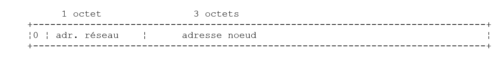
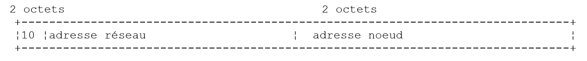
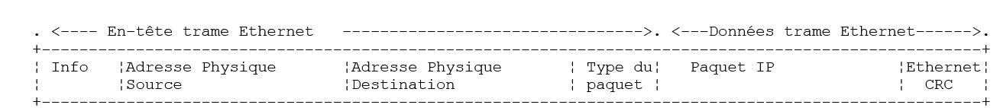
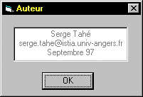

8. Schedule TCP-IP
8.1. General Information
8.1.1. Internet Protocols
Here we provide an introduction to Internet communication protocols, also known as the TCP/IP suite (Transmission Control Protocol/Internet Protocol), named after the two main protocols. It is advisable for the reader to have a general understanding of how networks work, particularly the TCP/IP protocols, before tackling the development of distributed applications.
The following text is a partial translation of a passage found in the document "Lan Workplace for Dos - Administrator's Guide" by NOVELL, a document from the early 1990s.
The general concept of creating a network of heterogeneous computers stems from research conducted by the DARPA (Defense Advanced Research Projects Agency) in the United States. The DARPA developed the suite of protocols known as TCP/IP, which allows heterogeneous machines to communicate with one another. These protocols were tested on a network called ARPAnet, which later became the INTERNET network. The TCP/IP protocols define formats and rules for transmission and reception that are independent of the network architecture and the hardware used.
The network designed by DARPA and managed by the TCP/IP protocols is a packet-switched network. Such a network transmits information over the network in small pieces called packets. Thus, if a computer transmits a large file, it will be broken down into small pieces that are sent over the network to be reassembled at the destination. TCP/IP defines the format of these packets, namely:
- packet source
- destination
- length
- type
8.1.2. The OSI model
The TCP/IP protocols closely follow the open network model known as OSI (Open Systems Interconnection Reference Model) defined by the ISO (International Standards Organisation). This model describes an ideal network where communication between machines can be represented by a seven-layer model:

Each layer receives services from the lower layer and provides its own to the upper layer. Suppose two applications located on different machines A and B want to communicate: they do so at the Application layer. They do not need to know all the details of how the network operates: each application passes the information it wishes to transmit to the layer below it: the Presentation layer. The application therefore only needs to know the rules for interfacing with the Presentation layer.
Once the information reaches the Presentation layer, it is passed on to the Session layer according to other rules, and so on, until the information reaches the physical medium and is physically transmitted to the destination machine. There, it undergoes the reverse process of what it underwent on the sending machine.
At each layer, the sender process responsible for sending the information sends it to a receiver process on the other machine belonging to the same layer. It does so according to certain rules known as the layer protocol. The final communication diagram is therefore as follows:

The roles of the different layers are as follows:
Ensures the transmission of bits over a physical medium. This layer includes data processing terminal equipment (E.T.T.D.) such as terminals or computers, as well as data circuit termination equipment (E.T.C.D.) such as modulators/demodulators, multiplexers, and concentrators. Key points at this level are: . the choice of information encoding (analog or digital) . the choice of transmission mode (synchronous or asynchronous). | |
Hides the physical characteristics of the Physical Layer. Detects and corrects transmission errors. | |
Manages the path that information sent over the network must follow. This is called routing: determining the route that information must take to reach its destination. | |
Enables communication between two applications, whereas the previous layers only allowed communication between machines. A service provided by this layer can be multiplexing: the transport layer can use a single network connection (from machine to machine) to transmit data belonging to multiple applications. | |
This layer provides services that allow an application to open and maintain a working session on a remote machine. | |
It aims to standardize the representation of data across different machines. Thus, data originating from machine A will be "formatted" by machine A’s Presentation layer according to a standard format before being sent over the network. Upon reaching the Presentation layer of the destination machine B, which will recognize them thanks to their standard format, they will be formatted differently so that the application on machine B can recognize them. | |
At this level, we find applications that are generally close to the user, such as email or file transfer. |
8.1.3. The TCP/IP model
The OSI model is an ideal model that has never yet been implemented. The TCP/IP protocol suite approximates it in the following form:

Physical Layer
In local area networks, Ethernet or Token-Ring technology is generally used. We will only discuss Ethernet technology here.
Ethernet
This is the name given to a packet-switched local area network technology invented at Xerox in the early 1970s and standardized by Xerox, Intel, and Digital Equipment in 1978. The network physically consists of a coaxial cable approximately 1.27 cm in diameter and up to 500 m in length. It can be extended using repeaters, with no more than two repeaters separating any two devices. The cable is passive: all active components are located on the machines connected to the cable. Each machine is connected to the cable via a network interface card comprising:
- a transceiver that detects the presence of signals on the cable and converts analog signals to digital signals and vice versa.
- a coupler that receives digital signals from the transceiver and transmits them to the computer for processing, or vice versa.
The main features of Ethernet technology are as follows:
- Capacity of 10 megabits per second.
- Bus topology: all machines are connected to the same cable

- Broadcast network—A transmitting machine sends information over the cable with the address of the receiving machine. All connected machines then receive this information, and only the intended recipient retains it.
- The access method is as follows: the transmitter wishing to transmit listens to the cable—it then detects whether or not a carrier wave is present, the presence of which would indicate that a transmission is in progress. This is the Carrier Sense Multiple Access (CSMA) technique. If no carrier is present, a transmitter may decide to transmit in turn. Several transmitters may make this decision. The transmitted signals mix together: this is called a collision. The transmitter detects this situation: while transmitting over the cable, it also listens to what is actually passing through it. If it detects that the information traveling over the cable is not the one it transmitted, it concludes that a collision has occurred and will stop transmitting. The other transmitters that were transmitting will do the same. Each will resume transmission after a random delay depending on the individual transmitter. This technique is called CD (Collision Detect). The access method is thus called CSMA/CD.
- 48-bit addressing. Each machine has an address, referred to here as the physical address, which is written on the card connecting it to the cable. This address is called the machine’s Ethernet address.
Network Layer
At this layer, we find the protocols IP, ICMP, ARP, and RARP.
IP (Internet Protocol) | Delivers packets between two network nodes |
ICMP (Internet Control Message Protocol) | ICMP facilitates communication between the IP protocol program on one machine and that on another machine. It is therefore a message exchange protocol within the IP protocol itself. |
ARP (Address Resolution Protocol) | maps machine Internet addresses to machine physical addresses |
RARP (Reverse Address Resolution Protocol) | maps a machine's physical address to its Internet address |
Transport/Session Layers
This layer includes the following protocols:
TCP (Transmission Control Protocol) | Ensures reliable delivery of information between two clients |
UDP (User Datagram Protocol) | Ensures unreliable delivery of information between two clients |
Application/Presentation/Session Layers
Various protocols are found here:
Terminal emulator allowing machine A to connect to machine B as a terminal | |
Enables file transfers | |
enables file transfers | |
enables the exchange of messages between network users | |
converts a machine name into the machine's Internet address | |
created by Sun MicroSystems, it specifies a standard, machine-independent representation of data | |
also defined by Sun, it is a communication protocol between remote applications, independent of the transport layer. This protocol is important: it relieves the programmer of the need to know the details of the transport layer and makes applications portable. This protocol is based on the XDR protocol | |
Also defined by Sun, this protocol allows one machine to "see" the file system of another machine. It is based on the previous RPC protocol |
8.1.4. How Internet Protocols Work
Applications developed in the TCP/IP environment generally use several of the protocols in this environment. An application program communicates with the highest layer of the protocols. This layer passes the information to the layer below it, and so on, until it reaches the physical medium. There, the information is physically transferred to the destination machine, where it will pass through the same layers again—this time in reverse—until it reaches the application intended to receive the sent information. The following diagram shows the path of the information:

Let’s take an example: the FTP application, defined at the Application layer, which enables file transfers between machines.
- The application delivers a sequence of bytes to be transmitted to the transport layer.
- The transport layer divides this sequence of bytes into segments TCP, and adds the segment number to the beginning of each segment. The segments are passed to the Network layer governed by the IP protocol.
- The IP layer creates a packet encapsulating the received TCP segment. At the beginning of this packet, it places the Internet addresses of the source and destination machines. It also determines the physical address of the destination machine. The entire packet is passed to the Data Link & Physical Layer, that is, to the network card that connects the machine to the physical network.
- There, the IP packet is in turn encapsulated in a physical frame and sent to its recipient over the cable.
- On the destination machine, the Data Link & Physical Layer does the opposite: it decapsulates the IP packet from the physical frame and passes it to the IP layer.
- The IP layer verifies that the packet is correct: it calculates a checksum based on the received bits, which it must find in the packet header. If this is not the case, the packet is discarded.
- If the packet is deemed valid, the IP layer decapsulates the TCP segment contained within it and passes it up to the transport layer.
- The transport layer, layer TCP in our example, examines the segment number to restore the correct order of the segments.
- It also calculates a checksum for the TCP segment. If it is found to be valid, the TCP layer sends an acknowledgment to the source machine; otherwise, the TCP segment is rejected.
- All that remains for the TCP layer to do is to transmit the data portion of the segment to the application intended to receive it in the layer above.
8.1.5. Addressing Issues on the Internet
A network node can be a computer, a smart printer, a file server—anything, in fact, that can communicate using the TCP/IP protocols. Each node has a physical address with a format that depends on the type of network. On an Ethernet network, the physical address is encoded over 6 bytes. An address on an X.25 network is a 14-digit number.
A node’s Internet address is a logical address: it is independent of the hardware and network used. It is a 4-byte address that identifies both a local network and a node on that network. The Internet address is usually represented as four numbers—the values of the four bytes—separated by a dot. Thus, the address of the machine Lagaffe at the Faculty of Sciences in Angers is written as 193.49.144.1, and that of the machine Liny as 193.49.144.9. From this, we can deduce that the Internet address of the local network is 193.49.144.0. There can be up to 254 nodes on this network.
Because Internet addresses or IP addresses are independent of the network, a machine on network A can communicate with a machine on network B without concerning itself with the type of network it is on: it simply needs to know its IP address. The IP protocol for each network handles the conversion between IP addresses and physical addresses, in both directions.
All IP addresses must be unique. Official organizations are responsible for assigning them. In fact, these organizations issue an address for local networks, for example 193.49.144.0 for the network of the Faculty of Sciences in Angers. The administrator of this network can then assign the addresses IP 193.49.144.1 to 193.49.144.254 as they see fit. This address is generally recorded in a specific file on each machine connected to the network.
8.1.5.1. The IP address classes
A IP address is a sequence of 4 bytes, often written as I1.I2.I3.I4, which actually contains two addresses:
- the network address
- the address of a node on that network
Depending on the size of these two fields, IP addresses are divided into 3 classes: classes A, B, and C.
Class A
The address IP: I1.I2.I3.I4 has the form R1.N1.N2.N3 where
R1 is the network address
N1.N2.N3 is the address of a machine on that network
More precisely, the form of a Class A address IP is as follows:

The network address is 7 bits long and the host address is 24 bits long. Therefore, there can be 127 Class A networks, each containing up to 224 hosts.
Class B
Here, the address IP: I1.I2.I3.I4 has the form R1.R2.N1.N2 where
R1.R2 is the network address
N1.N2 is the address of a machine on that network
More precisely, the format of a Class B address IP is as follows:

The network address is 2 bytes (14 bits exactly), as is the node address. Therefore, there can be 2¹⁴ Class B networks, each containing up to 2¹⁶ nodes.
Class C
In this class, the address IP: I1.I2.I3.I4 has the form R1.R2.R3.N1 where
R1.R2.R3 is the address of network
N1 is the address of a machine on that network
More precisely, the form of a Class C address IP is as follows:

The network address is 3 bytes (minus 3 bits) and the host address is 1 byte. Therefore, there can be 221 Class C networks, each containing up to 256 hosts.
Since the address of the Lagaffe machine at the Angers Faculty of Sciences is 193.49.144.1, we see that the most significant byte is 193, which is 11000001 in binary. We can deduce that the network is a Class C network.
Reserved addresses
. Certain addresses, such as IP, are network addresses rather than node addresses within the network. These are the ones where the node address is set to 0. Thus, the address 193.49.144.0 is the network address of the Faculty of Sciences in Angers. Consequently, no node in a network can have the address zero.
. When, in an address such as IP, the node address consists entirely of 1s, we have a broadcast address: this address refers to all nodes on the network.
. In a Class C network, which theoretically allows for 2⁸ = 256 nodes, if we remove the two prohibited addresses, we are left with only 254 authorized addresses.
8.1.5.2. Internet Address <--> Physical Address Conversion Protocols
We have seen that when data is transmitted from one machine to another, as it passes through the IP layer, it is encapsulated in packets. These have the following form:

The IP packet therefore contains the IP addresses of the source and destination machines. When this packet is passed to the layer responsible for sending it over the physical network, additional information is added to form the physical frame that will ultimately be sent over the network. For example, the format of a frame on an Ethernet network is as follows:

In the final frame, there are the physical addresses of the source and destination machines. How are they obtained?
The sending machine, knowing the address IP of the machine with which it wants to communicate, obtains the latter’s physical address by using a specific protocol called ARP (Address Resolution Protocol).
- It sends a special type of packet called a ARP packet containing the address IP of the machine whose physical address is being sought. It also includes its own address IP as well as its physical address.
- This packet is sent to all nodes on the network.
- These nodes recognize the special nature of the packet. The node that recognizes its address IP in the packet responds by sending its physical address to the packet’s sender. How is it able to do this? It found the sender’s IP address and physical address in the packet.
- The sender therefore receives the physical address it was looking for. It stores it in memory so it can use it later if other packets need to be sent to the same recipient.
A machine’s IP address is normally stored in one of its files, which it can consult to retrieve it. This address can be changed: simply edit the file. The physical address, however, is stored in the network card’s memory and cannot be changed.
When an administrator wishes to reorganize the network, they may need to change the IP addresses of all nodes and thus edit the various configuration files for each node. This can be tedious and prone to errors if there are many machines. One method involves not assigning a IP address to the machines: instead, a special code is entered into the file where the machine would normally find its IP address. Upon discovering that it does not have a IP address, the machine requests it using a protocol called RARP (Reverse Address Resolution Protocol). It then sends a special packet over the network called a RARP packet, analogous to the previous ARP packet, in which it includes its physical address. This packet is sent to all nodes, which then recognize a RARP packet. One of them, called the RARP server, has a file containing the physical address <--> IP address mapping for all nodes. It then responds to the sender of the RARP packet by sending back its IP address. An administrator wishing to reconfigure the network therefore only needs to edit the mapping file on the RARP server. This server should normally have a fixed address IP, which it should be able to know without having to use the RARP protocol itself.
8.1.6. The network layer, known as the IP layer of the Internet
The IP protocol (Internet Protocol) defines the format that packets must take and how they must be handled during transmission or reception. This particular type of packet is called a IP datagram. We have already introduced it:

The important point is that, in addition to the data to be transmitted, the IP datagram contains the Internet addresses of the source and destination machines. This way, the receiving machine knows who is sending it a message.
Unlike a network frame, whose length is determined by the physical characteristics of the network it traverses, the length of the IP datagram is fixed by the software and will therefore be the same across different physical networks. We have seen that as we move down from the network layer to the physical layer, the datagram IP is encapsulated in a physical frame. We gave the example of the physical frame of an Ethernet network:

Physical frames travel from node to node toward their destination, which may not be on the same physical network as the sending machine. The packet IP can therefore be successively encapsulated in different physical frames at the nodes that connect two networks of different types. It is also possible that the packet IP is too large to be encapsulated in a physical frame. The software IP on the node where this problem occurs then breaks the packet IP into fragments according to specific rules, each of which is then sent over the physical network. They will only be reassembled at their final destination.
8.1.6.1. Routing
Routing is the method of directing IP packets to their destination. There are two methods: direct routing and indirect routing.
Direct routing
Direct routing refers to the transmission of a IP packet directly from the sender to the recipient within the same network:
- The machine sending a IP datagram has the recipient’s address IP.
- It obtains the recipient’s physical address via the ARP protocol or from its tables, if that address has already been obtained.
- It sends the packet over the network to that physical address.
Indirect routing
Indirect routing refers to the transmission of a packet IP to a destination located on a network other than the one to which the sender belongs. In this case, the network address portions of the IP addresses of the source and destination machines are different. The source machine recognizes this. It then sends the packet to a special node called a router, a node that connects a local network to other networks and whose address IP it finds in its tables—an address initially obtained either from a file, from permanent memory, or via information circulating on the network.
A router is connected to two networks and has an address IP within these two networks.

In our example above:
- Network No. 1 has the Internet address 193.49.144.0 and Network No. 2 has the address 193.49.145.0.
- Within network #1, the router has the address 193.49.144.6 and the address 193.49.145.3 within network #2.
The router’s role is to convert the packet IP that it receives—which is contained in a physical frame typical of network #1—into a physical frame that can travel over network #2. If the address IP of the packet’s destination is in network #2, the router will send the packet directly to it; otherwise, it will send it to another router, connecting network #2 to network #3, and so on.
8.1.6.2. Error and Status Messages
Also in the network layer, at the same level as the IP protocol, is the ICMP protocol (Internet Control Message Protocol). It is used to send messages about the internal operation of the network: failed nodes, congestion at a router, etc. ICMP messages are encapsulated in IP packets and sent over the network. The IP layers of the various nodes take the appropriate actions based on the ICMP messages they receive. Thus, an application itself never sees these network-specific issues.
A node will use the ICMP information to update its routing tables.
8.1.7. The transport layer: the UDP and TCP protocols
8.1.7.1. The UDP protocol: User Datagram Protocol
The UDP protocol allows for an unreliable exchange of data between two points, meaning that the successful delivery of a packet to its destination is not guaranteed. The application, if it wishes, can handle this itself, for example by waiting for an acknowledgment after sending a message before sending the next one.
So far, at the network level, we have discussed IP addresses of machines. However, on a single machine, different processes can coexist simultaneously, all of which can communicate. Therefore, when sending a message, you must specify not only the IP address of the destination machine, but also the "name" of the destination process. This name is actually a number, called a port number. Certain numbers are reserved for standard applications: port 69 for the TFTP (Trivial File Transfer Protocol) application, for example.
The packets handled by the UDP protocol are also called datagrams. They have the following form:

These datagrams will be encapsulated in IP packets, then in physical frames.
8.1.7.2. The TCP protocol: Transfer Control Protocol
For secure communications, the UDP protocol is insufficient: the application developer must create a protocol themselves to ensure proper packet routing.
The TCP protocol (Transfer Control Protocol) avoids these issues. Its features are as follows:
- The process wishing to transmit first establishes a connection with the process that will receive the information it is about to transmit. This connection is established between a port on the sending machine and a port on the receiving machine. A virtual path is thus created between the two ports, which will be reserved exclusively for the two processes that have established the connection.
- All packets sent by the source process follow this virtual path and arrive in the order in which they were sent, which was not guaranteed in the UDP protocol since packets could follow different paths.
- The transmitted information appears continuous. The sending process sends information at its own pace. This information is not necessarily sent immediately: the TCP protocol waits until it has enough to send. It is stored in a structure called a TCP segment. Once this segment is filled, it will be transmitted to the IP layer, where it will be encapsulated in a IP packet.
- Each segment sent by the TCP protocol is numbered. The receiving TCP protocol verifies that it is receiving the segments in sequence. For each segment received correctly, it sends an acknowledgment to the sender.
- When the sender receives this acknowledgment, it notifies the sending process. The sending process can thus confirm that a segment has arrived successfully, which was not possible with the UDP protocol.
- If, after a certain amount of time, the TCP protocol that sent a segment does not receive an acknowledgment, it retransmits the segment in question, thereby ensuring the quality of the information delivery service.
- The virtual circuit established between the two communicating processes is full-duplex: this means that information can flow in both directions. Thus, the destination process can send acknowledgments even while the source process continues to send information. This allows, for example, the source TCP protocol to send multiple segments without waiting for an acknowledgment. If, after a certain amount of time, it realizes that it has not received an acknowledgment for a specific segment No. n, it will resume sending segments from that point.
8.1.8. The Application Layer
Above the UDP and TCP protocols, there are various standard protocols:
TELNET
This protocol allows a user on machine A on the network to connect to machine B (often called the host machine). TELNET emulates a so-called universal terminal on machine A. The user therefore behaves as if they had a terminal connected to machine B. Telnet is based on the TCP protocol.
FTP: (File Transfer Protocol)
This protocol enables file exchange between two remote machines as well as file operations such as creating directories, for example. It relies on the TCP protocol.
TFTP: (Trivial File Transfer Control)
This protocol is a variant of FTP. It is based on the UDP protocol and is less sophisticated than FTP.
DNS: (Domain Name System)
When a user wants to exchange files with a remote machine—such as FTP, for example—they must know that machine’s IP address. For example, to run FTP on the Lagaffe machine at the University of Angers, you would need to launch FTP as follows: FTP 193.49.144.1
This requires a directory mapping machines to IP addresses. In this directory, the machines would likely be designated by symbolic names such as:
machine DPX2/320 at the University of Angers
Sun machine at the University of Angers
It is clear that it would be more convenient to refer to a machine by a name rather than by its address IP. This raises the issue of name uniqueness: there are millions of interconnected machines. One might imagine a centralized body assigning the names. That would undoubtedly be quite cumbersome. Control over names has in fact been distributed across domains. Each domain is managed by an organization that is generally very lean and has complete freedom in choosing machine names. Thus, machines in France belong to the fr domain, which is managed by Inria in Paris. To further simplify matters, control is distributed even further: domains are created within the fr domain. Thus, the University of Angers belongs to the univ-Angers domain. The department managing this domain has complete freedom to name the machines on the University of Angers network. For now, this domain has not been subdivided. But in a large university with many networked machines, it could be.
The machine DPX2/320 at the University of Angers has been named Lagaffe, while a PC 486DX50 has been named liny. How do we refer to these machines from the outside? By specifying the hierarchy of domains to which they belong. Thus, the full name of the machine Lagaffe will be:
Within domains, relative names can be used. Thus, within the fr domain and outside the univ-Angers domain, the machine Lagaffe can be referenced as
Finally, within the univ-Angers domain, it can be referenced simply as
An application can therefore refer to a machine by its name. Ultimately, however, you still need to obtain the machine’s Internet address. How is this done? Suppose that from machine A, you want to communicate with machine B.
- If machine B belongs to the same domain as machine A, we will likely find its address IP in a file on machine A.
- Otherwise, machine A will find, in another file or the same one as before, a list of several name servers with their addresses IP. A name server is responsible for mapping a machine name to its address IP. Machine A will send a special request to the first name server on its list, called a DNS request, which includes the name of the machine being searched for. If the queried server has this name in its records, it will send the corresponding address, IP, to machine A. Otherwise, the server will also find in its files a list of name servers it can query. It will then do so. Thus, a number of name servers will be queried, not haphazardly but in a way that minimizes the number of requests. If the machine is finally found, the response will be sent back to machine A.
XDR: (eXternal Data Representation)
Created by sun MicroSystems, this protocol specifies a standard, machine-independent data representation.
RPC: (Remote Procedure Call)
Also defined by Sun, this is a transport-layer-independent communication protocol for remote applications. This protocol is important: it relieves the programmer of the need to know the details of the transport layer and makes applications portable. This protocol is based on the XDR protocol
NFS: Network File System
Also defined by Sun, this protocol allows one machine to "see" the file system of another machine. It is based on the preceding RPC protocol.
8.1.9. Conclusion
In this introduction, we have presented some key aspects of Internet protocols. To explore this field further, readers may consult Douglas Comer’s excellent book:
Title: TCP/IP: Architecture, Protocols, Applications.
Author: Douglas COMER
Publisher: InterEditions
8.2. Network Address Management in Java
8.2.1. Definition
Every machine on the Internet is identified by a unique address or name. In Java, these two entities are managed by the InetAddress class, which includes the following methods:
returns the 4 bytes of the IP address of the current InetAddress instance | |
returns the IP address of the current InetAddress instance | |
returns the Internet name of the current instance InetAddress | |
returns the address IP and the Internet name of the current instance InetAddress | |
creates the InetAddress instance of the machine designated by Host. Throws an exception if Host is unknown. Host can be the Internet name of a machine or its IP address in the form I1.I2.I3.I4 | |
creates the InetAddress instance of the machine on which the program containing this instruction is running. |
8.2.2. Some examples
8.2.2.1. Identify the local machine
import java.net.*;
public class localhost{
public static void main (String arg[]){
try{
InetAddress adresse=InetAddress.getLocalHost();
byte[] IP=adresse.getAddress();
System.out.print("IP=");
int i;
for(i=0;i<IP.length-1;i++) System.out.print(IP[i]+".");
System.out.println(IP[i]);
System.out.println("adresse="+adresse.getHostAddress());
System.out.println("nom="+adresse.getHostName());
System.out.println("identité="+adresse);
} catch (UnknownHostException e){
System.out.println ("Erreur getLocalHost : "+e);
}// fin try
}// fine hand
}// fin class
The results of the execution are as follows:
Every machine has an internal IP address, which is 127.0.0.1. When a program uses this network address, it is using the machine on which it is running. The advantage of this address is that it does not require a network card. Therefore, you can test network programs without being connected to a network. Another way to refer to the local machine is to use the name localhost.
8.2.2.2. Identifying any machine
import java.net.*;
public class getbyname{
public static void main (String arg[]){
String nomMachine;
// we retrieve the argument
if(arg.length==0)
nomMachine="localhost";
else nomMachine=arg[0];
// we try to obtain the machine address
try{
InetAddress adresse=InetAddress.getByName(nomMachine);
System.out.println("IP : "+ adresse.getHostAddress());
System.out.println("nom : "+ adresse.getHostName());
System.out.println("identité : "+ adresse);
} catch (UnknownHostException e){
System.out.println ("Erreur getByName : "+e);
}// fin try
}// fine hand
}// fin class
With the **java getByName** call, we get the following results:
With the call **java getbyname shiva.istia.univ-angers.fr**, we get:
With the Java call **getbyname www.ibm.com**, we get:
8.3. Communications TCP-IP
8.3.1. General

When a AppA application on machine A wants to communicate with a AppB application on machine B on the Internet, it must know several things:
- the address or name of machine B
- the port number used by the AppB application. This is because machine B may support many applications that operate on the Internet. When it receives information from the network, it must know which application the information is intended for. The applications on machine B access the network through interfaces also known as communication ports. This information is contained in the packet received by machine B so that it can be delivered to the correct application.
- The communication protocols understood by machine B. In our study, we will use only the TCP-IP protocols.
- the communication protocol accepted by the AppB application. Indeed, machines A and B will "communicate" with each other. What they will say will be encapsulated in the TCP-IP protocols. However, when, at the end of the chain, the AppB application receives the information sent by the AppA application, it must be able to interpret it. This is analogous to the situation where two people, A and B, communicate by telephone: their conversation is transmitted via the telephone. Speech is encoded as signals by telephone A, transmitted over telephone lines, and received by telephone B, where it is decoded. Person B then hears the speech. This is where the concept of a communication protocol comes into play: if A speaks French and B does not understand that language, A and B will not be able to communicate effectively.
Therefore, the two communicating applications must agree on the type of communication protocol they will use. For example, communication with an FTP service is not the same as with a POP service: these two services do not accept the same commands. They use different communication protocols.
8.3.2. Characteristics of the TCP protocol
Here, we will only examine network communications using the TCP transport protocol. Let us review the characteristics of this protocol:
- The process that wishes to transmit first establishes a connection with the process that will receive the information it is about to transmit. This connection is made between a port on the sending machine and a port on the receiving machine. A virtual path is thus created between the two ports, which will be reserved exclusively for the two processes that have established the connection.
- All packets sent by the source process follow this virtual path and arrive in the order in which they were sent
- The transmitted information appears continuous. The sending process sends information at its own pace. This information is not necessarily sent immediately: the TCP protocol waits until it has enough to send. It is stored in a structure called a TCP segment. Once this segment is filled, it will be transmitted to the IP layer, where it will be encapsulated in a IP packet.
- Each segment sent by the TCP protocol is numbered. The receiving TCP protocol verifies that it is receiving the segments in sequence. For each segment received correctly, it sends an acknowledgment to the sender.
- When the sender receives this acknowledgment, it notifies the sending process. The sending process can thus confirm that a segment has been successfully delivered.
- If, after a certain amount of time, the TCP protocol that sent a segment does not receive an acknowledgment, it retransmits the segment in question, thereby ensuring the quality of the information delivery service.
- The virtual circuit established between the two communicating processes is full-duplex: this means that information can flow in both directions. Thus, the destination process can send acknowledgments even while the source process continues to send information. This allows, for example, the source TCP protocol to send multiple segments without waiting for an acknowledgment. If, after a certain amount of time, it realizes it has not received an acknowledgment for a specific segment No. n, it will resume sending segments from that point.
8.3.3. The client-server relationship
Communication over the Internet is often asymmetric: machine A initiates a connection to request a service from machine B, specifying that it wants to open a connection with machine B’s SB1 service. Machine B accepts or refuses. If it accepts, machine A can send its requests to service SB1. These requests must comply with the communication protocol understood by service SB1. A request-response dialogue is thus established between machine A, referred to as the client machine, and machine B, referred to as the server machine. One of the two partners will close the connection.
8.3.4. Client Architecture
The architecture of a network program requesting the services of a server application will be as follows:
ouvrir la connexion avec le service SB1 de la machine B
si réussite alors
tant que ce n'is not finished
préparer une demande
l'send to machine B
attendre et récupérer la réponse
la traiter
fin tant que
finsi
8.3.5. Server architecture
The architecture of a program offering services will be as follows:
ouvrir le service sur la machine locale
tant que le service est ouvert
se mettre à l'listens for connection requests on a so-called listening port
lorsqu'there is a request, have it processed by another task on another port called the service port
fin tant que
The server program handles a client's initial connection request differently from its subsequent requests for service. The program does not provide the service itself. If it did, it would no longer be listening for connection requests while the service was in progress, and the clients requests would not be served. It therefore proceeds differently: as soon as a connection request is received on the listening port and then accepted, the server creates a task responsible for providing the service requested by the client. This service is provided on another port of the server machine called the service port. This allows multiple clients to be served at the same time.
A service task will have the following structure:
tant que le service n'has not been fully rendered
attendre une demande sur le port de service
lorsqu'there is one, elaborate the answer
transmettre la réponse via le port de service
fin tant que
libérer le port de service
8.3.6. The Socket class
8.3.6.1. Definition
The basic tool used by programs communicating over the Internet is the socket. This English word means "electrical outlet." Here, it is extended to mean "network outlet." For an application to send and receive information over the Internet, it needs a network outlet, a socket. This tool was originally created in the Berkeley versions of Unix. It has since been ported to all Unix systems as well as the Windows environment. It also exists on Java virtual machines in two forms: the Socket class for client applications and the ServerSocket class for server applications. Here we explain some of the constructors and methods of the Socket class:
opens a remote connection to port port on the host machine |
returns the local port number used by the socket | |||
returns the number of the remote port to which the socket is connected | |||
returns the local InetAddress address to which the socket is bound | |||
returns the remote address InetAddress to which the socket is connected | |||
returns an input stream for reading data sent by the remote partner | |||
returns an output stream used to send data to the remote partner | |||
closes the socket's input stream | |||
closes the socket's output stream | |||
closes the socket and its I/O streams | |||
returns a string "representing" the socket | |||
8.3.6.2. Opening a connection to a server machine
We have seen that for machine A to open a connection to a service on machine B, it needs two pieces of information:
- the address IP or the name of machine B
- the port number where the desired service is running
The constructor
creates a socket and connects it to machine host on port port. This constructor throws an exception in various cases:
- incorrect address
- incorrect port
- request denied
- …
We need to handle this exception:
Socket sClient=null;
try{
sClient=new Socket(host,port);
} catch(Exception e){
// connection failed - error handled
….
}
If the connection request succeeds, the client is assigned a local port to communicate with machine B. Once the connection is established, this port can be obtained using the method:
If the connection succeeds, we have seen that, on its end, the server has another task handle the service on a so-called service port. This port number can be obtained using the method:
8.3.6.3. Sending Information Over the Network
You can obtain a write stream on the socket—and thus on the network—using the method:
Everything sent to this stream will be received on the server machine’s service port. Many applications feature a dialog consisting of text lines terminated by a newline character. Therefore, the println method is very useful in these cases. We then convert the output stream OutputStream into the stream PrintWriter, which has the println method. Writing may generate an exception.
8.3.6.4. Reading information from the network
We can obtain a read stream for the data arriving on the socket using the method:
Everything read from this stream comes from the server machine’s service port. For applications with a dialog consisting of text lines terminated by a newline, we prefer to use the readLine method. To do this, we convert the InputStream input stream into a BufferedReader stream, which has the readLine() method. Reading may throw an exception.
8.3.6.5. Closing the connection
This is done using the method:
The method may throw an exception. The resources used, notably the network port, are released.
8.3.6.6. Client architecture
We now have the elements to describe the basic architecture of an Internet client:
Socket sClient=null;
try{
// connect to the service running on port P of machine M
sClient=new Socket(M,P);
// create client socket I/O streams
BufferedReader in=new BufferedReader(new InputStreamReader(sClient.getInputStream()));
PrintWriter out=new PrintWriter(sClient.getOutputStream(),true);
// request-response loop
boolean fini=false;
String demande;
String réponse;
while (! fini){
// preparing the application
demande=…
// we send it
out.println(demande);
// we read the answer
réponse=in.readLine();
// the answer is processed
…
}
// it's over
sClient.close();
} catch(Exception e){
// we handle the exception
….
}
We did not attempt to handle the various types of exceptions generated by the Socket constructor or the readline, getInputStream, getOutputStream, and close methods in order to keep the example simple. Everything has been consolidated into a single exception.
8.3.7. The ServerSocket class
8.3.7.1. Definition
This class is intended for server-side socket management. Here we explain some of the constructors and methods of this class:
creates a listening socket on port port | |
Same as above, but sets the queue size to count, c.a.d. This is the maximum number of client connections that will be queued if the server is busy when a client connection arrives. |
returns the number of the listening port used by the socket | |
Returns the local address InetAddress to which the socket is bound | |
Puts the server in a waiting state for a connection (blocking operation). Upon arrival of a client connection, returns a socket through which service will be provided to the client. | |
closes the socket and its I/O streams | |
returns a string "representing" the socket | |
closes the service socket and releases the resources associated with it |
8.3.7.2. Opening the service
This is done using the two constructors:
port is the service’s listening port: the one to which clients send their connection requests. count is the maximum size of the service’s queue (50 by default), which stores connection requests from clients that the server has not yet responded to. When the queue is full, incoming connection requests are rejected. Both constructors throw an exception.
8.3.7.3. Accepting a connection request
When a client sends a connection request to the service’s listening port, the service accepts it using the method:
This method returns a Socket instance: this is the service socket, through which the service will be provided, most often by another task. The method may throw an exception.
8.3.7.4. Reading/Writing via the service socket
Since the service socket is an instance of the Socket class, please refer to the previous sections where this topic was covered.
8.3.7.5. Identify the client
Once the service socket has been obtained, the client can be identified using the
method of the Socket class. This provides access to the address IP and the client's name.
8.3.7.6. Close the service
This is done using the method
method of the ServerSocket class. This frees up the occupied resources, notably the listening port. The method may throw an exception.
8.3.7.7. Basic server architecture
Based on what has been said, we can write the basic structure of a server:
SocketServer sEcoute=null;
try{
// sERVICE OPENING
int portEcoute=…
int maxConnexions=…
sEcoute=new ServerSocket(portEcoute,maxConnexions);
// processing connection requests
boolean fini=false;
Socket sService=null;
while( ! fini){
// waiting for and accepting a request
sService=sEcoute.accept();
// the service is rendered by another task to which the service socket is transferred
new Service(sService).start();
// we put ourselves back on hold for connection requests
}
// it's over - we're closing the service
sEcoute.close();
} catch (Exception e){
// we handle the exception
…
}
The Service class is a thread that might look like this:
public class Service extends Thread{
Socket sService; // service socket
// manufacturer
public Service(Socket S){
sService=S;
}
// run
public void run(){
try{
// create input-output flows
BufferedReader in=new BufferedReader(new InputStreamReader(sService.getInputStream()));
PrinttWriter out=new PrintWriter(sService.getOutputStream(),true);
// request-response loop
boolean fini=false;
String demande;
String réponse;
while (! fini){
// we read the request
demande=in.readLine();
// we treat it
…
// we prepare the answer
réponse=…
// we send it
out.println(réponse);
}
// it's over
sService.close();
} catch(Exception e){
// we handle the exception
….
}// try
} // run
8.4. Applications
8.4.1. Echo server
We propose to write an echo server that will be launched from a DOS window using the command:
The server runs on the port passed as a parameter. It simply sends back to the client the request the client sent it, along with the client’s identity (IP+name). It accepts 2 connections in its queue. Here we have all the components of a tcp server. The program is as follows:
// call: serveurEcho port
// echo server
// returns the line sent to the customer
import java.net.*;
import java.io.*;
public class serveurEcho{
public final static String syntaxe="Syntaxe : serveurEcho port";
public final static int nbConnexions=2;
// main program
public static void main (String arg[]){
// is there an argument
if(arg.length != 1)
erreur(syntaxe,1);
// this argument must be integer >0
int port=0;
boolean erreurPort=false;
Exception E=null;
try{
port=Integer.parseInt(arg[0]);
}catch(Exception e){
E=e;
erreurPort=true;
}
erreurPort=erreurPort || port <=0;
if(erreurPort)
erreur(syntaxe+"\n"+"Port incorrect ("+E+")",2);
// create the listening socket
ServerSocket ecoute=null;
try{
ecoute=new ServerSocket(port,nbConnexions);
} catch (Exception e){
erreur("Erreur lors de la création de la socket d'écoute ("+e+")",3);
}
// follow-up
System.out.println("Serveur d'écho lancé sur le port " + port);
// service loop
boolean serviceFini=false;
Socket service=null;
while (! serviceFini){
// waiting for a customer
try{
service=ecoute.accept();
} catch (IOException e){
erreur("Erreur lors de l'acceptation d'une connexion ("+e+")",4);
}
// we identify the link
try{
System.out.println("Client ["+identifie(service.getInetAddress())+","+
service.getPort()+"] connecté au serveur [" + identifie (InetAddress.getLocalHost())
+ "," + service.getLocalPort() + "]");
} catch (Exception e) {
erreur("identification liaison",1);
}
// the service is provided by another task
new traiteClientEcho(service).start();
}// fin while
}// fine hand
// error display
public static void erreur(String msg, int exitCode){
System.err.println(msg);
System.exit(exitCode);
}
// identifies
private static String identifie(InetAddress Host){
// host identification
String ipHost=Host.getHostAddress();
String nomHost=Host.getHostName();
String idHost;
if (nomHost == null) idHost=ipHost;
else idHost=ipHost+","+nomHost;
return idHost;
}
}// end class
// provides service to an echo server client
class traiteClientEcho extends Thread{
private Socket service; // service socket
private BufferedReader in; // iNPUTS
private PrintWriter out; // output flow
// manufacturer
public traiteClientEcho(Socket service){
this.service=service;
}
// run method
public void run(){
// creation of input and output flows
try{
in=new BufferedReader(new InputStreamReader(service.getInputStream()));
} catch (IOException e){
erreur("Erreur lors de la création du flux déentrée de la socket de service ("+e+")",1);
}// fin try
try{
out=new PrintWriter(service.getOutputStream(),true);
} catch (IOException e){
erreur("Erreur lors de la création du flux de sortie de la socket de service ("+e+")",1);
}// fin try
// link identification is sent to the customer
try{
out.println("Client ["+identifie(service.getInetAddress())+","+
service.getPort()+"] connecté au serveur [" + identifie (InetAddress.getLocalHost())
+ "," + service.getLocalPort() + "]");
} catch (Exception e) {
erreur("identification liaison",1);
}
// loop read request/write response
String demande,reponse;
try{
// the service stops when the client sends an end-of-file marker
while ((demande=in.readLine())!=null){
// echo of demand
reponse="["+demande+"]";
out.println(reponse);
// service stops when client sends "end
if(demande.trim().toLowerCase().equals("fin")) break;
}// fin while
} catch (IOException e){
erreur("Erreur lors des échanges client/serveur ("+e+")",3);
}// fin try
// close the socket
try{
service.close();
} catch (IOException e){
erreur("Erreur lors de la fermeture de la socket de service ("+e+")",2);
}// fin try
}// end run
// error display
public static void erreur(String msg, int exitCode){
System.err.println(msg);
System.exit(exitCode);
}// end error
// identifies
private String identifie(InetAddress Host){
// host identification
String ipHost=Host.getHostAddress();
String nomHost=Host.getHostName();
String idHost;
if (nomHost == null) idHost=ipHost;
else idHost=ipHost+","+nomHost;
return idHost;
}
}// end class
The two classes required for the service have been combined into a single source file. Only one of them, the one containing the main function, has the public attribute. The server structure conforms to the general architecture of tcp servers. A method (identify) has been added to identify the connection between the server and a client. Here are some results:
The server is launched by the command
It then displays the following message in the console window:
To test this server, we use the telnet program, which is available on both Unix and Windows. Telnet is a universal client suitable for all servers that accept text lines terminated by a line-end character in their communication. This is the case with our echo server. We launch a first Telnet client on Windows (2000 in this example) by typing telnet in a command window:
DOS>telnet
Microsoft (R) Windows 2000 (TM) version 5.00 (numéro 2195)
Client Telnet Microsoft
Client Telnet numéro 5.00.99203.1
Le caractère d'escapement is 'CTRL+$'
Microsoft Telnet> help
Les commandes peuvent être abrégées. Les commandes prises en charge sont :
close ferme la connexion en cours
display affiche les paramètres d'operation
open ouvre une connexion à un site
quit quitte telnet
set définit les options (entrez 'set ?' to display the list)
status affiche les informations d'status
unset annule les options (entrez 'unset ?' to display the list)
? ou help affiche des informations d'assistance
Microsoft Telnet> set ?
NTLM Active l'authentication NTLM.
LOCAL_ECHO Active l'local echo.
TERM x (où x est ANSI, VT100, VT52 ou VTNT))
CRLF Envoi de CR et de LF
Microsoft Telnet> set local_echo
Microsoft Telnet> open localhost 187
By default, the Telnet program does not echo commands typed on the keyboard. To enable this echo, enter the command:
To open a connection to the server, specifying the echo service port (187) and the address of the machine it is running on (localhost), enter the following command:
In the client’s DOS window, you will then receive the message:
In the server window, the following message appears:
Serveur d'echo launched on port 187
Client [127.0.0.1,tahe,1059] connecté au serveur [127.0.0.1,tahe,187]
Here, tahe and localhost refer to the same machine. In the Telnet client window, you can type lines of text. The server echoes them back:
Client [127.0.0.1,tahe,1059] connectÚ au serveur [127.0.0.1,tahe,187]
je suis là
[je suis là]
au revoir
[au revoir]
Note that the client port (1059) is correctly detected, but the service port (187) is identical to the listening port (187), which is unexpected. One would indeed expect to get the service socket port rather than the listening port. We should check if we get the same results on Unix. Now, let’s launch a second Telnet client. The server window becomes:
Serveur d'echo launched on port 187
Client [127.0.0.1,tahe,1059] connecté au serveur [127.0.0.1,tahe,187]
Client [127.0.0.1,tahe,1060] connecté au serveur [127.0.0.1,tahe,187]
In the second client's window, you can also type lines of text:
Client [127.0.0.1,tahe,1060] connecté au serveur [127.0.0.1,tahe,187]
ligne1
[ligne1]
ligne2
[ligne2]
This shows that the echo server can serve multiple clients connections at the same time. The clients telnet connections can be terminated by closing the DOS window in which they are running.
8.4.2. A Java client for the echo server
In the previous section, we used a Telnet client to test the echo service. Now we will write our own client:
// call: clientEcho machine port
// echo server client
// sends lines to the server, which echoes them back to the server
import java.net.*;
import java.io.*;
public class clientEcho{
public final static String syntaxe="Syntaxe : clientEcho machine port";
// main program
public static void main (String arg[]){
// are there two arguments
if(arg.length != 2)
erreur(syntaxe,1);
// the first argument must be the name of an existing machine
String machine=arg[0];
InetAddress serveurAddress=null;
try{
serveurAddress=InetAddress.getByName(machine);
} catch (Exception e){
erreur(syntaxe+"\nMachine "+machine+" inaccessible (" + e +")",2);
}
// port must be integer >0
int port=0;
boolean erreurPort=false;
Exception E=null;
try{
port=Integer.parseInt(arg[1]);
}catch(Exception e){
E=e;
erreurPort=true;
}
erreurPort=erreurPort || port <=0;
if(erreurPort)
erreur(syntaxe+"\nPort incorrect ("+E+")",3);
// connect to the server
Socket sClient=null;
try{
sClient=new Socket(machine,port);
} catch (Exception e){
erreur("Erreur lors de la création de la socket de communication ("+e+")",4);
}
// we identify the link
try{
System.out.println("Client : Client ["+identifie(InetAddress.getLocalHost())+","+
sClient.getLocalPort()+"] connecté au serveur [" + identifie (sClient.getInetAddress())
+ "," + sClient.getPort() + "]");
} catch (Exception e) {
erreur("identification liaison ("+e+")",5);
}
// creation of a flow for reading lines typed on the keyboard
BufferedReader IN=null;
try{
IN=new BufferedReader(new InputStreamReader(System.in));
} catch (Exception e){
erreur("Création du flux d'entrée clavier ("+e+")",6);
}
// creation of the input stream associated with the client socket
BufferedReader in=null;
try{
in=new BufferedReader(new InputStreamReader(sClient.getInputStream()));
} catch (Exception e){
erreur("Création du flux d'entrée de la socket client("+e+")",7);
}
// creation of the output stream associated with the client socket
PrintWriter out=null;
try{
out=new PrintWriter(sClient.getOutputStream(),true);
} catch (Exception e){
erreur("Création du flux de sortie de la socket ("+e+")",8);
}
// request-response loops
boolean serviceFini=false;
String demande=null;
String reponse=null;
// we read the message sent by the server just after connection
try{
reponse=in.readLine();
} catch (IOException e){
erreur("Lecture réponse ("+e+")",4);
}
// response display
System.out.println("Serveur : " +reponse);
while (! serviceFini){
// read a line typed on the keyboard
System.out.print("Client : ");
try{
demande=IN.readLine();
} catch (Exception e){
erreur("Lecture ligne ("+e+")",9);
}
// sending demand on the network
try{
out.println(demande);
} catch (Exception e){
erreur("Envoi demande ("+e+")",10);
}
// wait/read answer
try{
reponse=in.readLine();
} catch (IOException e){
erreur("Lecture réponse ("+e+")",4);
}
// response display
System.out.println("Serveur : " +reponse);
// is it over?
if(demande.trim().toLowerCase().equals("fin")) serviceFini=true;
}
// it's over
try{
sClient.close();
} catch(Exception e){
erreur("Fermeture socket ("+e+")",11);
}
}// hand
// error display
public static void erreur(String msg, int exitCode){
System.err.println(msg);
System.exit(exitCode);
}
// identifies
private static String identifie(InetAddress Host){
// host identification
String ipHost=Host.getHostAddress();
String nomHost=Host.getHostName();
String idHost;
if (nomHost == null) idHost=ipHost;
else idHost=ipHost+","+nomHost;
return idHost;
}
}// fin class
The structure of this client conforms to the general architecture of clients and tcp. Here, we have handled the various possible exceptions one by one, which makes the program heavier. Here are the results obtained when testing this client:
Client : Client [127.0.0.1,tahe,1045] connecté au serveur [127.0.0.1,localhost,187]
Serveur : Client [127.0.0.1,localhost,1045] connectÚ au serveur [127.0.0.1,tahe,187]
Client : 123
Serveur : [123]
Client : abcd
Serveur : [abcd]
Client : je suis là
Serveur : [je suis là]
Client : fin
Serveur : [fin]
Lines beginning with Client are those sent by the client, and those beginning with Server are those echoed back by the server.
8.4.3. A generic TCP client
Many services created at the dawn of the Internet operate according to the echo server model discussed earlier: client-server communication consists of exchanging lines of text. We will write a generic tcp client that will be launched as follows: java cltTCPgenerique server port
This TCP client will connect to port port on the server server. Once connected, it will create two threads:
- a thread responsible for reading commands typed on the keyboard and sending them to the server
- a thread responsible for reading the server’s responses and displaying them on the screen
Why two threads when this wasn’t necessary in the previous application? In that application, the communication protocol was fixed: the client sent a single line, and the server responded with a single line. Each service has its own specific protocol, and the following situations may also arise:
- the client must send several lines of text before receiving a response
- a server’s response may contain multiple lines of text
Therefore, the loop that sends a single line to the server and receives a single line from the server is not always suitable. We will therefore create two separate loops:
- a loop to read commands typed on the keyboard to be sent to the server. The user will signal the end of commands with the keyword "end."
- a loop to receive and display the server’s responses. This will be an infinite loop that will only be interrupted by the server closing the network connection or by the user typing the “end” command on the keyboard.
To have these two separate loops, we need two independent threads. Let’s look at an example of execution where our generic client tcp connects to a service SMTP (SendMail Transfer Protocol). This service is responsible for routing email to its recipients. It runs on port 25 and uses a text-based exchange protocol.
Dos>java clientTCPgenerique istia.univ-angers.fr 25
Commandes :
<-- 220 istia.univ-angers.fr ESMTP Sendmail 8.11.6/8.9.3; Mon, 13 May 2002 08:37:26 +0200
help
<-- 502 5.3.0 Sendmail 8.11.6 -- HELP not implemented
mail from: machin@univ-angers.fr
<-- 250 2.1.0 machin@univ-angers.fr... Sender ok
rcpt to: serge.tahe@istia.univ-angers.fr
<-- 250 2.1.5 serge.tahe@istia.univ-angers.fr... Recipient ok
data
<-- 354 Enter mail, end with "." on a line by itself
Subject: test
ligne1
ligne2
ligne3
.
<-- 250 2.0.0 g4D6bks25951 Message accepted for delivery
quit
<-- 221 2.0.0 istia.univ-angers.fr closing connection
[fin du thread de lecture des réponses du serveur]
fin
[fin du thread d'send orders to server]
Let's comment on these client-server exchanges:
- the SMTP service sends a welcome message when a client connects to it:
- Some services have a `help` command that provides information on the commands available for the service. This is not the case here. The SMTP commands used in the example are as follows:
- mail from: sender, to specify the sender’s email address
- rcpt to: recipient, to specify the email address of the message recipient. If there are multiple recipients, the rcpt to: command is repeated as many times as necessary for each recipient.
- data, which signals to the server SMTP that the message is about to be sent. As indicated in the server’s response, this is a sequence of lines ending with a line containing only a period. A message may have headers separated from the message body by a blank line. In our example, we included a subject using the Subject: keyword.
- Once the message is sent, you can tell the server that you are done using the quit command. The server then closes the network connection. The read thread can detect this event and stop.
- The user then types "end" on the keyboard to also stop the thread reading keyboard commands.
If we check the received email, we see the following (Outlook):

Note that the SMTP service cannot determine whether a sender is valid or not. Therefore, the "From" field of a message should never be trusted. In this case, the sender machin@univ-angers.fr did not exist.
This generic tcp client allows us to discover the Internet service communication protocol and, from there, build specialized classes for the clients components of these services. Let’s explore the POP service protocol (Post Office Protocol), which allows users to retrieve their emails stored on a server. It operates on port 110.
Dos> java clientTCPgenerique istia.univ-angers.fr 110
Commandes :
<-- +OK Qpopper (version 4.0.3) at istia.univ-angers.fr starting.
help
<-- -ERR Unknown command: "help".
user st
<-- +OK Password required for st.
pass monpassword
<-- +OK st has 157 visible messages (0 hidden) in 11755927 bytes.
list
<-- +OK 157 visible messages (11755927 bytes)
<-- 1 892847
<-- 2 171661
...
<-- 156 2843
<-- 157 2796
<-- .
retr 157
<-- +OK 2796 bytes
<-- Received: from lagaffe.univ-angers.fr (lagaffe.univ-angers.fr [193.49.144.1])
<-- by istia.univ-angers.fr (8.11.6/8.9.3) with ESMTP id g4D6wZs26600;
<-- Mon, 13 May 2002 08:58:35 +0200
<-- Received: from jaume ([193.49.146.242])
<-- by lagaffe.univ-angers.fr (8.11.1/8.11.2/GeO20000215) with SMTP id g4D6wSd37691;
<-- Mon, 13 May 2002 08:58:28 +0200 (CEST)
...
<-- ------------------------------------------------------------------------
<-- NOC-RENATER2 Tl. : 0800 77 47 95
<-- Fax : (+33) 01 40 78 64 00 , Email : noc-r2@cssi.renater.fr
<-- ------------------------------------------------------------------------
<--
<-- .
quit
<-- +OK Pop server at istia.univ-angers.fr signing off.
[fin du thread de lecture des réponses du serveur]
fin
[fin du thread d'send orders to server]
The main commands are as follows:
- user login, where you enter your login on the machine that holds your emails
- pass password, where you enter the password associated with the previous login
- list, to get a list of messages in the format number, size in bytes
- retr i, to read message #i
- quit, to end the session.
Let’s now explore the communication protocol between a client and a web server, which typically runs on port 80:
Dos> java clientTCPgenerique istia.univ-angers.fr 80
Commandes :
GET /index.html HTTP/1.0
<-- HTTP/1.1 200 OK
<-- Date: Mon, 13 May 2002 07:30:58 GMT
<-- Server: Apache/1.3.12 (Unix) (Red Hat/Linux) PHP/3.0.15 mod_perl/1.21
<-- Last-Modified: Wed, 06 Feb 2002 09:00:58 GMT
<-- ETag: "23432-2bf3-3c60f0ca"
<-- Accept-Ranges: bytes
<-- Content-Length: 11251
<-- Connection: close
<-- Content-Type: text/html
<--
<-- <html>
<--
<-- <head>
<-- <meta http-equiv="Content-Type"
<-- content="text/html; charset=iso-8859-1">
<-- <meta name="GENERATOR" content="Microsoft FrontPage Express 2.0">
<-- <title>Welcome to ISTIA - Universite d'Angers</title>
<-- </head>
....
<-- face="Verdana"> - Last updated on <b>January 10, 2002</b></font></p>
<-- </body>
<-- </html>
<--
[fin du thread de lecture des réponses du serveur]
fin
[fin du thread d'send orders to server]
A web client sends its commands to the server according to the following pattern:
The web server responds only after receiving the empty line. In this example, we used only one command:
which requests the file URL /index.html from the server and indicates that it is using the HTTP version 1.0 protocol. The most recent version of this protocol is 1.1. The example shows that the server responded by returning the contents of the index.html file and then closed the connection, as we can see the response read thread terminating. Before sending the contents of the index.html file, the web server sent a series of headers ending with an empty line:
<-- HTTP/1.1 200 OK
<-- Date: Mon, 13 May 2002 07:30:58 GMT
<-- Server: Apache/1.3.12 (Unix) (Red Hat/Linux) PHP/3.0.15 mod_perl/1.21
<-- Last-Modified: Wed, 06 Feb 2002 09:00:58 GMT
<-- ETag: "23432-2bf3-3c60f0ca"
<-- Accept-Ranges: bytes
<-- Content-Length: 11251
<-- Connection: close
<-- Content-Type: text/html
<--
<-- <html>
The line <html> is the first line of the file /index.html. The preceding text is called the HTTP headers (HyperText Transfer Protocol). We won’t go into detail about these headers here, but keep in mind that our generic client provides access to them, which can be helpful for understanding them. For example, the first line:
indicates that the contacted web server understands the HTTP/1.1 protocol and that it successfully found the requested file (200 OK), where 200 is a HTTP response code. The lines
tell the client that it will receive 11,251 bytes of text in HTML (HyperText Markup Language) and that the connection will be closed once the data has been sent.
So here we have a very handy tcp client. It undoubtedly does less than the telnet program we used previously, but it was interesting to write it ourselves. The generic tcp client program is as follows:
// imported packages
import java.io.*;
import java.net.*;
public class clientTCPgenerique{
// receives the characteristics of a service as a parameter in the form
// server port
// connects to the service
// creates a thread to read keyboard commands
// these will be sent to the
// creates a thread to read server responses
// these will be displayed on the screen
// the whole thing ends with the command end typed on the keyboard
// instance variable
private static Socket client;
public static void main(String[] args){
// syntax
final String syntaxe="pg serveur port";
// number of arguments
if(args.length != 2)
erreur(syntaxe,1);
// note the server name
String serveur=args[0];
// port must be integer >0
int port=0;
boolean erreurPort=false;
Exception E=null;
try{
port=Integer.parseInt(args[1]);
}catch(Exception e){
E=e;
erreurPort=true;
}
erreurPort=erreurPort || port <=0;
if(erreurPort)
erreur(syntaxe+"\n"+"Port incorrect ("+E+")",2);
client=null;
// there may be problems
try{
// connect to the service
client=new Socket(serveur,port);
}catch(Exception ex){
// error
erreur("Impossible de se connecter au service ("+ serveur
+","+port+"), erreur : "+ex.getMessage(),3);
// end
return;
}//catch
// create read/write threads
new ClientSend(client).start();
new ClientReceive(client).start();
// end thread main
return;
}// hand
// error display
public static void erreur(String msg, int exitCode){
// error display
System.err.println(msg);
// stop with error
System.exit(exitCode);
}//error
}//class
class ClientSend extends Thread {
// class for reading keyboard commands
// and send them to a server via a client tcp passed in parameter
private Socket client; // the customer tcp
// manufacturer
public ClientSend(Socket client){
// customer tcp is noted
this.client=client;
}//manufacturer
// thread Run method
public void run(){
// local data
PrintWriter OUT=null; // network write streams
BufferedReader IN=null; // keyboard flow
String commande=null; // command read from keyboard
// error management
try{
// create network write stream
OUT=new PrintWriter(client.getOutputStream(),true);
// keyboard input stream creation
IN=new BufferedReader(new InputStreamReader(System.in));
// order entry-send loop
System.out.println("Commandes : ");
while(true){
// read command typed on keyboard
commande=IN.readLine().trim();
// finished?
if (commande.toLowerCase().equals("fin")) break;
// send order to server
OUT.println(commande);
// next order
}//while
}catch(Exception ex){
// error
System.err.println("Envoi : L'erreur suivante s'est produite : " + ex.getMessage());
}//catch
// end - we close the feeds
try{
OUT.close();client.close();
}catch(Exception ex){}
// signals the end of the thread
System.out.println("[Envoi : fin du thread d'envoi des commandes au serveur]");
}//run
}//class
class ClientReceive extends Thread{
// class responsible for reading lines of text intended for a
// customer tcp passed as parameter
private Socket client; // the customer tcp
// manufacturer
public ClientReceive(Socket client){
// customer tcp is noted
this.client=client;
}//manufacturer
// thread Run method
public void run(){
// local data
BufferedReader IN=null; // network read stream
String réponse=null; // server response
// error management
try{
// create network read stream
IN=new BufferedReader(new InputStreamReader(client.getInputStream()));
// loop read text lines from IN stream
while(true){
// network streaming
réponse=IN.readLine();
// closed flow?
if(réponse==null) break;
// display
System.out.println("<-- "+réponse);
}//while
}catch(Exception ex){
// error
System.err.println("Réception : L'erreur suivante s'est produite : " + ex.getMessage());
}//catch
// end - we close the feeds
try{
IN.close();client.close();
}catch(Exception ex){}
// signals the end of the thread
System.out.println("[Réception : fin du thread de lecture des réponses du serveur]");
}//run
}//class
8.4.4. A generic Tcp server
Now we are looking at a server
- that displays on the screen the commands sent by its clients
- sends them, in response, the lines of text typed on the keyboard by a user. It is therefore the user who acts as the server.
The program is launched by: java serveurTCPgenerique portEcoute, where portEcoute is the port to which the clients must connect. Service to the client will be provided by two threads:
- a thread dedicated exclusively to reading the lines of text sent by the client
- a thread dedicated exclusively to reading the responses typed by the user. This thread will signal, using the `fin` command, that it is closing the connection with the client.
The server creates two threads per client. If there are n clients instances, there will be 2n active threads at the same time. The server itself never stops unless the user presses Ctrl-C on the keyboard. Let’s look at a few examples.
The server is running on port 100, and we use the generic client to communicate with it. The client window looks like this:
E:\data\serge\MSNET\c#\réseau\client tcp générique> java clientTCPgenerique localhost 100
Commandes :
commande 1 du client 1
<-- answer 1 to customer 1
commande 2 du client 1
<-- answer 2 to customer 1
fin
L'the following error has occurred: Unable to read transport connection data.
[fin du thread de lecture des réponses du serveur]
[fin du thread d'send orders to server]
Lines beginning with <-- are those sent from the server to the client; the others are from the client to the server. The server window is as follows:
Dos> java serveurTCPgenerique 100
Serveur générique lancé sur le port 100
Thread de lecture des réponses du serveur au client 1 lancé
1 : Thread de lecture des demandes du client 1 lancé
<-- order 1 from customer 1
réponse 1 au client 1
1 : <-- order 2 from customer 1
réponse 2 au client 1
1 : [fin du Thread de lecture des demandes du client 1]
fin
[fin du Thread de lecture des réponses du serveur au client 1]
Lines beginning with <-- are those sent from the client to the server. Lines N: are those sent from the server to client N. The server above is still active even though client 1 has finished. We launch a second client for the same server:
Dos> java clientTCPgenerique localhost 100
Commandes :
commande 3 du client 2
<-- answer 3 to customer 2
fin
L'the following error has occurred: Unable to read transport connection data.
[fin du thread de lecture des réponses du serveur]
[fin du thread d'send orders to server]
The server window then looks like this:
Dos> java serveurTCPgenerique 100
Serveur générique lancé sur le port 100
Thread de lecture des réponses du serveur au client 1 lancé
1 : Thread de lecture des demandes du client 1 lancé
<-- order 1 from customer 1
réponse 1 au client 1
1 : <-- order 2 from customer 1
réponse 2 au client 1
1 : [fin du Thread de lecture des demandes du client 1]
fin
[fin du Thread de lecture des réponses du serveur au client 1]
Thread de lecture des réponses du serveur au client 2 lancé
2 : Thread de lecture des demandes du client 2 lancé
<-- order 3 from customer 2
réponse 3 au client 2
2 : [fin du Thread de lecture des demandes du client 2]
fin
[fin du Thread de lecture des réponses du serveur au client 2]
^C
Now let's simulate a web server by running our generic server on port 88:
Dos> java serveurTCPgenerique 88
Serveur générique lancé sur le port 88
Now let’s open a browser and request the page URL http://localhost:88/example.html. The browser will then connect to port 88 on the localhost machine and request the page /example.html:

Now let's look at our server window:
Dos>java serveurTCPgenerique 88
Serveur générique lancé sur le port 88
Thread de lecture des réponses du serveur au client 2 lancé
2 : Thread de lecture des demandes du client 2 lancé
<-- GET /exemple.html HTTP/1.1
<-- Accept: image/gif, image/x-xbitmap, image/jpeg, image/pjpeg, application/msword, */*
<-- Accept-Language: fr
<-- Accept-Encoding: gzip, deflate
<-- User-Agent: Mozilla/4.0 (compatible; MSIE 6.0; Windows NT 5.0; .NET CLR 1.0.3705; .NET CLR 1.0.2
914)
<-- Host: localhost:88
<-- Connection: Keep-Alive
<--
We can thus see the HTTP headers sent by the browser. This allows us to gradually uncover the HTTP protocol. In a previous example, we created a web client that sent only the single GET command. That had been sufficient. Here we see that the browser sends other information to the server. The purpose of this information is to tell the server what type of client it is dealing with. We also see that the HTTP headers end with an empty line.
Let’s craft a response for our client. The user at the keyboard is the actual server here and can craft a response manually. Recall the response sent by a web server in a previous example:
<-- HTTP/1.1 200 OK
<-- Date: Mon, 13 May 2002 07:30:58 GMT
<-- Server: Apache/1.3.12 (Unix) (Red Hat/Linux) PHP/3.0.15 mod_perl/1.21
<-- Last-Modified: Wed, 06 Feb 2002 09:00:58 GMT
<-- ETag: "23432-2bf3-3c60f0ca"
<-- Accept-Ranges: bytes
<-- Content-Length: 11251
<-- Connection: close
<-- Content-Type: text/html
<--
<-- <html>
Let's try to provide a similar response:
...
<-- Host: localhost:88
<-- Connection: Keep-Alive
<--
2 : HTTP/1.1 200 OK
2 : Server: serveur tcp generique
2 : Connection: close
2 : Content-Type: text/html
2 :
2 : <html>
2 : <head><title>Serveur generique</title></head>
2 : <body>
2 : <center>
2 : <h2>Reponse du serveur generique</h2>
2 : </center>
2 : </body>
2 : </html>
2 : fin
L'the following error has occurred: Unable to read transport connection data.
[fin du Thread de lecture des demandes du client 2]
[fin du Thread de lecture des réponses du serveur au client 2]
Lines beginning with 2: are sent from the server to client #2. The end command closes the connection from the server to the client. In our response, we have limited ourselves to the following headers: HTTP
HTTP/1.1 200 OK
2 : Server: serveur tcp generique
2 : Connection: close
2 : Content-Type: text/html
2 :
We do not specify the size of the file we are sending (Content-Length), but simply indicate that we will close the connection (Connection: close) after sending it. This is sufficient for the browser. When it sees that the connection is closed, it will know that the server’s response is complete and will display the page HTML that was sent to it. The page is as follows:
2 : <html>
2 : <head><title>Serveur generique</title></head>
2 : <body>
2 : <center>
2 : <h2>Reponse du serveur generique</h2>
2 : </center>
2 : </body>
2 : </html>
The user then closes the connection to the client by typing the command "fin". The browser then knows that the server's response is complete and can display it:

If, in the example above, you select View/Source to see what the browser received, you get:

that is, exactly what was sent from the generic server.
The code for the generic tcp server is as follows:
// packages
import java.io.*;
import java.net.*;
public class serveurTCPgenerique{
// main program
public static void main (String[] args){
// receives listening port for clients requests
// creates a thread to read client requests
// these will be displayed on the screen
// creates a thread to read keyboard commands
// these will be sent as a reply to the customer
// the whole thing ends with the command end typed on the keyboard
final String syntaxe="Syntaxe : pg port";
// instance variable
// is there an argument
if(args.length != 1)
erreur(syntaxe,1);
// port must be integer >0
int port=0;
boolean erreurPort=false;
Exception E=null;
try{
port=Integer.parseInt(args[0]);
}catch(Exception e){
E=e;
erreurPort=true;
}
erreurPort=erreurPort || port <=0;
if(erreurPort)
erreur(syntaxe+"\n"+"Port incorrect ("+E+")",2);
// we create the listening service
ServerSocket ecoute=null;
int nbClients=0; // number of clients processed
try{
// create the service
ecoute=new ServerSocket(port);
// follow-up
System.out.println("Serveur générique lancé sur le port " + port);
// service loop at clients
Socket client=null;
while (true){ // infinite loop - will be stopped by Ctrl-C
// waiting for a customer
client=ecoute.accept();
// the service is provided by separate threads
nbClients++;
// create read/write threads
new ServeurSend(client,nbClients).start();
new ServeurReceive(client,nbClients).start();
// back to listening to requests
}// fin while
}catch(Exception ex){
// we report the error
erreur("L'erreur suivante s'est produite : " + ex.getMessage(),3);
}//catch
}// fine hand
// error display
public static void erreur(String msg, int exitCode){
// error display
System.err.println(msg);
// stop with error
System.exit(exitCode);
}//error
}//class
class ServeurSend extends Thread{
// class responsible for reading typed responses
// and send them to a client via a tcp client passed to the
Socket client; // the customer tcp
int numClient; // customer no
// manufacturer
public ServeurSend(Socket client, int numClient){
// customer tcp is noted
this.client=client;
// and its
this.numClient=numClient;
}//manufacturer
// thread Run method
public void run(){
// local data
PrintWriter OUT=null; // network write streams
String réponse=null; // answer read from keyboard
BufferedReader IN=null; // keyboard flow
// follow-up
System.out.println("Thread de lecture des réponses du serveur au client "+ numClient + " lancé");
// error management
try{
// network write stream creation
OUT=new PrintWriter(client.getOutputStream(),true);
// keyboard flow creation
IN=new BufferedReader(new InputStreamReader(System.in));
// order entry-send loop
while(true){
// customer identification
System.out.print("--> " + numClient + " : ");
// read response typed on keyboard
réponse=IN.readLine().trim();
// finished?
if (réponse.toLowerCase().equals("fin")) break;
// send response to server
OUT.println(réponse);
// following response
}//while
}catch(Exception ex){
// error
System.err.println("L'erreur suivante s'est produite : " + ex.getMessage());
}//catch
// end - close flows
try{
OUT.close();client.close();
}catch(Exception ex){}
// signals the end of the thread
System.out.println("[fin du Thread de lecture des réponses du serveur au client "+ numClient+ "]");
}//run
}//class
class ServeurReceive extends Thread{
// class responsible for reading text lines sent to the server
// via a tcp client passed to the builder
Socket client; // the customer tcp
int numClient; // customer no
// manufacturer
public ServeurReceive(Socket client, int numClient){
// customer tcp is noted
this.client=client;
// and its
this.numClient=numClient;
}//manufacturer
// thread Run method
public void run(){
// local data
BufferedReader IN=null; // network read stream
String réponse=null; // server response
// follow-up
System.out.println("Thread de lecture des demandes du client "+ numClient + " lancé");
// error management
try{
// create network read stream
IN=new BufferedReader(new InputStreamReader(client.getInputStream()));
// loop read text lines from IN stream
while(true){
// network streaming
réponse=IN.readLine();
// closed flow?
if(réponse==null) break;
// display
System.out.println("<-- "+réponse);
}//while
}catch(Exception ex){
// error
System.err.println("L'erreur suivante s'est produite : " + ex.getMessage());
}//catch
// end - close flows
try{
IN.close();client.close();
}catch(Exception ex){}
// signals the end of the thread
System.out.println("[fin du Thread de lecture des demandes du client "+ numClient+"]");
}//run
}//class
8.4.5. A Web client
In the previous example, we saw some of the headers HTTP sent by a browser:
<-- GET /exemple.html HTTP/1.1
<-- Accept: image/gif, image/x-xbitmap, image/jpeg, image/pjpeg, application/msword, */*
<-- Accept-Language: fr
<-- Accept-Encoding: gzip, deflate
<-- User-Agent: Mozilla/4.0 (compatible; MSIE 6.0; Windows NT 5.0; .NET CLR 1.0.3705; .NET CLR 1.0.2
914)
<-- Host: localhost:88
<-- Connection: Keep-Alive
<--
We will write a web client that takes a URL as a parameter and displays the contents of that URL on the screen. We will assume that the web server contacted for the URL supports the HTTP 1.1 protocol. From the headers above, we will only use the following:
- The first header indicates which page we want
- the second which server we are querying
- the third that we want the server to close the connection after responding to us.
If, in the example above, we replace GET with HEAD, the server will send us only the headers for HTTP and not the page for HTML.
Our web client will be called as follows: java clientweb URL cmd, where URL is thedesired URL and cmd is one of the two keywords GET or HEAD to indicate whether we want only the headers (HEAD) or also the page content (GET). Let’s look at a first example. We start the server IIS and then the web client on the same machine:
dos>java clientweb http://localhost HEAD
HTTP/1.1 302 Object moved
Server: Microsoft-IIS/5.0
Date: Mon, 13 May 2002 09:23:37 GMT
Connection: close
Location: /IISSamples/Default/welcome.htm
Content-Length: 189
Content-Type: text/html
Set-Cookie: ASPSESSIONIDGQQQGUUY=HMFNCCMDECBJJBPPBHAOAJNP; path=/
Cache-control: private
The response
means that the requested page has moved (i.e., from URL). The new location, URL, is provided by the Location:
If we use GET instead of HEAD in the Web client call:
dos>java clientweb http://localhost GET
HTTP/1.1 302 Object moved
Server: Microsoft-IIS/5.0
Date: Mon, 13 May 2002 09:33:36 GMT
Connection: close
Location: /IISSamples/Default/welcome.htm
Content-Length: 189
Content-Type: text/html
Set-Cookie: ASPSESSIONIDGQQQGUUY=IMFNCCMDAKPNNGMGMFIHENFE; path=/
Cache-control: private
<head><title>L'object has changed location</title></head>
<body><h1>L'object has changed location</h1>This object can be found <a HREF="/IISSamples/Default/we
lcome.htm">ici</a>.</body>
We get the same result as with HEAD, plus the body of the HTML page. The program is as follows:
// imported packages
import java.io.*;
import java.net.*;
public class clientweb{
// requests a URL
// displays its contents on the screen
public static void main(String[] args){
// syntax
final String syntaxe="pg URI GET/HEAD";
// number of arguments
if(args.length != 2)
erreur(syntaxe,1);
// note the URI required
String URLString=args[0];
String commande=args[1].toUpperCase();
// URI validity check
URL url=null;
try{
url=new URL(URLString);
}catch (Exception ex){
// URI incorrect
erreur("L'erreur suivante s'est produite : " + ex.getMessage(),2);
}//catch
// order verification
if(! commande.equals("GET") && ! commande.equals("HEAD")){
// incorrect order
erreur("Le second paramètre doit être GET ou HEAD",3);
}
// extract useful information from URL
String path=url.getPath();
if(path.equals("")) path="/";
String query=url.getQuery();
if(query!=null) query="?"+query; else query="";
String host=url.getHost();
int port=url.getPort();
if(port==-1) port=url.getDefaultPort();
// we can work
Socket client=null; // the customer
BufferedReader IN=null; // the customer's reading flow
PrintWriter OUT=null; // the customer's writing flow
String réponse=null; // server response
try{
// connect to the server
client=new Socket(host,port);
// create customer input/output flows TCP
IN=new BufferedReader(new InputStreamReader(client.getInputStream()));
OUT=new PrintWriter(client.getOutputStream(),true);
// request URL - send HTTP headers
OUT.println(commande + " " + path + query + " HTTP/1.1");
OUT.println("Host: " + host + ":" + port);
OUT.println("Connection: close");
OUT.println();
// we read the answer
while((réponse=IN.readLine())!=null){
// the answer is processed
System.out.println(réponse);
}//while
// it's over
client.close();
} catch(Exception e){
// we handle the exception
erreur(e.getMessage(),4);
}//catch
}//hand
// error display
public static void erreur(String msg, int exitCode){
// error display
System.err.println(msg);
// stop with error
System.exit(exitCode);
}//error
}//class
The only new feature in this program is the use of the URL class. The program receives a URL (Uniform Resource Locator) or URI (Uniform Resource Identifier) in the form http://server:port/cheminPageHTML?param1=val1;param2=val2;.... The URL class allows us to break down the URL string into its various components. A URL object is constructed from the URLstring string received as a parameter:
// URL validity check
URL url=null;
try{
url=new URL(URLString);
}catch (Exception ex){
// URI incorrect
erreur("L'erreur suivante s'est produite : " + ex.getMessage(),2);
}//catch
If the URL string received as a parameter is not a valid URL (missing protocol, server, etc.), an exception is thrown. This allows us to verify the validity of the received parameter. Once the URL object is constructed, we have access to its various elements. Thus, if the url object from the previous code was constructed from the string
we will get:
url.getHost()=server
url.getPort()=port or -1 if the port is not specified
url.getPath()=cheminPageHTML or an empty string if there is no path
url.getQuery()=param1=val1;param2=val2;... or null if there is no query
uri.getProtocol()=http
8.4.6. Web client handling redirects
The previous web client does not handle a possible redirection of the URL it requested. The following client does handle it.
- It reads the first line of the HTTP headers sent by the server to check if it contains the string "302 Object moved," which indicates a redirect
- It reads the following headers. If there is a redirect, it searches for the line "Location: url," which provides the new URL (URL) for the requested page, and notes this URL (URL).
- It displays the rest of the server's response. If there is a redirect, steps 1 through 3 are repeated with the new URL. The program does not accept more than one redirect. This limit is defined by a constant that can be modified.
Here is an example:
Dos>java clientweb2 http://localhost GET
HTTP/1.1 302 Object moved
Server: Microsoft-IIS/5.0
Date: Mon, 13 May 2002 11:38:55 GMT
Connection: close
Location: /IISSamples/Default/welcome.htm
Content-Length: 189
Content-Type: text/html
Set-Cookie: ASPSESSIONIDGQQQGUUY=PDGNCCMDNCAOFDMPHCJNPBAI; path=/
Cache-control: private
<head><title>L'object has changed location</title></head>
<body><h1>L'object has changed location</h1>This object can be found <a HREF="/IISSamples/Default/we
lcome.htm">ici</a>.</body>
<--Redirect to URL http://localhost:80/IISSamples/Default/welcome.htm-->
HTTP/1.1 200 OK
Server: Microsoft-IIS/5.0
Connection: close
Date: Mon, 13 May 2002 11:38:55 GMT
Content-Type: text/html
Accept-Ranges: bytes
Last-Modified: Mon, 16 Feb 1998 21:16:22 GMT
ETag: "0174e21203bbd1:978"
Content-Length: 4781
<html>
<head>
<title>Bienvenue dans le Serveur Web personnel</title>
</head>
....
</body>
</html>
The program is as follows:
// imported packages
import java.io.*;
import java.net.*;
import java.util.regex.*;
public class clientweb2{
// requests a URL
// displays its contents on the screen
public static void main(String[] args){
// syntax
final String syntaxe="pg URL GET/HEAD";
// number of arguments
if(args.length != 2)
erreur(syntaxe,1);
// note the URI required
String URLString=args[0];
String commande=args[1].toUpperCase();
// URI validity check
URL url=null;
try{
url=new URL(URLString);
}catch (Exception ex){
// URI incorrect
erreur("L'erreur suivante s'est produite : " + ex.getMessage(),2);
}//catch
// order verification
if(! commande.equals("GET") && ! commande.equals("HEAD")){
// incorrect order
erreur("Le second paramètre doit être GET ou HEAD",3);
}
// we can work
Socket client=null; // the customer
BufferedReader IN=null; // the customer's reading flow
PrintWriter OUT=null; // the customer's writing flow
String réponse=null; // server response
final int nbRedirsMax=1; // no more than one redirection accepted
int nbRedirs=0; // number of redirects in progress
String premièreLigne; // 1st line of the answer
boolean redir=false; // indicates redirection or not
String locationString=""; // the URL string of a possible redirection
// regular expression to find a URL redirect
Pattern location=Pattern.compile("^Location: (.+?)$");
// error management
try{
// you may have several URL to request if there are redirections
while(nbRedirs<=nbRedirsMax){
// extract useful info from URL
String protocol=url.getProtocol();
String path=url.getPath();
if(path.equals("")) path="/";
String query=url.getQuery();
if(query!=null) query="?"+query; else query="";
String host=url.getHost();
int port=url.getPort();
if(port==-1) port=url.getDefaultPort();
// connect to the server
client=new Socket(host,port);
// create customer input/output flows TCP
IN=new BufferedReader(new InputStreamReader(client.getInputStream()));
OUT=new PrintWriter(client.getOutputStream(),true);
// request URL - send HTTP headers
OUT.println(commande + " " + path + query + " HTTP/1.1");
OUT.println("Host: " + host + ":" + port);
OUT.println("Connection: close");
OUT.println();
// read the first line of the answer
premièreLigne=IN.readLine();
// screen echo
System.out.println(premièreLigne);
// redirection?
if(premièreLigne.endsWith("302 Object moved")){
// there is a redirection
redir=true;
nbRedirs++;
}//if
// next HTTP headers until you find the empty line signalling the end of the headers
boolean locationFound=false;
while(!(réponse=IN.readLine()).equals("")){
// the answer is displayed
System.out.println(réponse);
// if there is a redirection, we search for the Location header
if(redir && ! locationFound){
// compare the line with the relational expression location
Matcher résultat=location.matcher(réponse);
if(résultat.find()){
// if found, note the URL of redirection
locationString=résultat.group(1);
// we note that we found
locationFound=true;
}//if
}//if
// next header
}//while
// following lines of the answer
System.out.println(réponse);
while((réponse=IN.readLine())!=null){
// the answer is displayed
System.out.println(réponse);
}//while
// close the connection
client.close();
// are we done?
if ( ! locationFound || nbRedirs>nbRedirsMax)
break;
// there is a redirection to be made - the new URL is built
URLString=protocol +"://"+host+":"+port+locationString;
url=new URL(URLString);
// follow-up
System.out.println("\n<--Redirection vers l'URL "+URLString+"-->\n");
}//while
} catch(Exception e){
// we handle the exception
erreur(e.getMessage(),4);
}//catch
}//hand
// error display
public static void erreur(String msg, int exitCode){
// error display
System.err.println(msg);
// stop with error
System.exit(exitCode);
}//error
}//class
8.4.7. Tax Calculation Server
We are revisiting exercise IMPOTS, which has already been covered in various forms. Let’s review the latest version:
A base class named **impots** has been created. Its attributes are three arrays of numbers:
public class impots{
// data required for tax calculation
// come from an external source
protected double[] limites=null;
protected double[] coeffR=null;
protected double[] coeffN=null;
// empty builder
protected impots(){}
// manufacturer
public impots(double[] LIMITES, double[] COEFFR, double[] COEFFN) throws Exception{
The impots class has two constructors:
- a constructor that takes the three arrays of data needed to calculate the tax
- a parameterless constructor usable only by child classes
The class impotsJDBC is derived from this class and allows the three limit arrays, coeffR, coeffN, to be populated from the contents of a database:
public class impotsJDBC extends impots{
// addition of a constructor for building
// limit tables, coeffr, coeffn from table
// database taxes
public impotsJDBC(String dsnIMPOTS, String userIMPOTS, String mdpIMPOTS)
throws SQLException,ClassNotFoundException{
// dsnIMPOTS: DSN database name
// userIMPOTS, mdpIMPOTS: database login/password
A graphical application had been written. The application used an object of the impotsJDBC class. The application and this object were on the same machine. We propose to place the test program and the impotsJDBC object on different machines. We will have a client-server application where the remote impotsJDBC object will act as the server. The new class is called ServeurImpots and is derived from the impotsJDBC class:
// imported packages
import java.net.*;
import java.io.*;
import java.sql.*;
public class ServeurImpots extends impotsJDBC {
// attributes
int portEcoute; // request listening port clients
boolean actif; // server status
// manufacturer
public ServeurImpots(int portEcoute,String DSNimpots, String USERimpots, String MDPimpots)
throws IOException, SQLException, ClassNotFoundException {
// parent construction
super(DSNimpots, USERimpots, MDPimpots);
// we note the listening port
this.portEcoute=portEcoute;
// currently inactive
actif=false;
// creates and launches a thread for reading keyboard commands
// the server will be managed using these commands
Thread admin=new Thread(){
public void run(){
try{
admin();
}catch (Exception ignored){}
}
};
admin.start();
}//ServeurImpots
The only new parameter in the constructor is the port used to listen for requests from clients. The other parameters are passed directly to the base class impotsJDBC. The tax server is controlled by commands entered via the keyboard. Therefore, we create a thread to read these commands. There will be two possible commands: start to launch the service, and stop to shut it down permanently. The admin method that handles these commands is as follows:
public void admin() throws IOException{
// reads server administration commands typed from the keyboard
// in an endless loop
String commande=null;
BufferedReader IN=new BufferedReader(new InputStreamReader(System.in));
while(true){
// invite
System.out.print("Serveur d'impôts>");
// read command
commande=IN.readLine().trim().toLowerCase();
// order execution
if(commande.equals("start")){
// active?
if(actif){
//error
System.out.println("Le serveur est déjà actif");
// we continue
continue;
}//if
// create and launch the listening service
Thread ecoute=new Thread(){
public void run(){
ecoute();
}
};
ecoute.start();
}//if
else if(commande.equals("stop")){
// end of all execution threads
System.exit(0);
}//if
else {
// error
System.out.println("Commande incorrecte. Utilisez (start,stop)");
}//if
}//while
}//admin
If the command entered via the keyboard is "start", a thread that listens for clients requests is launched. If the command entered is "stop", all threads are stopped. The listening thread executes the listen method:
public void ecoute(){
// thread for listening to clients requests
// we create the listening service
ServerSocket ecoute=null;
try{
// create the service
ecoute=new ServerSocket(portEcoute);
// follow-up
System.out.println("Serveur d'impôts lancé sur le port " + portEcoute);
// service loop
Socket liaisonClient=null;
while (true){ // infinite loop
// waiting for a customer
liaisonClient=ecoute.accept();
// the service is provided by another task
new traiteClientImpots(liaisonClient,this).start();
// back to listening to requests
}// fin while
}catch(Exception ex){
// we report the error
erreur("L'erreur suivante s'est produite : " + ex.getMessage(),3);
}//catch
}//listening thread
We have a standard tcp server listening on port portEcoute. Requests from clients are handled by the run method of the traiteCientImpots thread, to whose constructor we pass two parameters:
- the Socket object liaisonClient, which will allow access to the client
- the impotsJDBC object `this`, which provides access to the this.calculer method for calculating the tax.
// -------------------------------------------------------
// provides service to a tax server client
class traiteClientImpots extends Thread{
private Socket liaisonClient; // customer liaison
private BufferedReader IN; // iNPUTS
private PrintWriter OUT; // output flow
private impotsJDBC objImpots; // object Tax
// manufacturer
public traiteClientImpots(Socket liaisonClient,impotsJDBC objImpots){
this.liaisonClient=liaisonClient;
this.objImpots=objImpots;
}//manufacturer
The run method processes requests from clients. These are lines of text that can take two forms:
- married calculation (y/n) nbEnfants salaireAnnuel
- endCalculations
Form 1 allows for tax calculation; form 2 closes the client-server connection.
// run method
public void run(){
// renders service to the customer
try{
// iNPUTS
IN=new BufferedReader(new InputStreamReader(liaisonClient.getInputStream()));
// output flow
OUT=new PrintWriter(liaisonClient.getOutputStream(),true);
// send a welcome message to the customer
OUT.println("Bienvenue sur le serveur d'impôts");
// loop read request/write response
String demande=null;
String[] champs=null; // elements of the request
String commande=null; // customer order: calculation or fincalculs
while ((demande=IN.readLine())!=null){
// demand is broken down into fields
champs=demande.trim().toLowerCase().split("\\s+");
// two successful applications: calcul and fincalculs
commande=champs[0];
if(! commande.equals("calcul") && ! commande.equals("fincalculs")){
// customer error
OUT.println("Commande incorrecte. Utilisez (calcul,fincalculs).");
// next order
continue;
}//if
if(commande.equals("calcul")) calculerImpôt(champs);
if(commande.equals("fincalculs")){
// good-bye message to customer
OUT.println("Au revoir...");
// freeing up resources
try{ OUT.close();IN.close();liaisonClient.close();}
catch(Exception ex){}
// end
return;
}//if
//following request
}//while
}catch (Exception e){
erreur("L'erreur suivante s'est produite ("+e+")",2);
}// fin try
}// end Run
The tax calculation is performed by the calculerImpôt method, which receives the array of fields from the customer's request as a parameter. The validity of the request is verified, and if valid, the tax is calculated and returned to the customer.
// tax calculation
public void calculerImpôt(String[] champs){
// processing the application: calculation married nbEnfants salaireAnnuel
// broken down into fields in the fields table
String marié=null;
int nbEnfants=0;
int salaireAnnuel=0;
// validity of arguments
try{
// at least 4 fields are required
if(champs.length!=4) throw new Exception();
// married
marié=champs[1];
if (! marié.equals("o") && ! marié.equals("n")) throw new Exception();
// children
nbEnfants=Integer.parseInt(champs[2]);
// salary
salaireAnnuel=Integer.parseInt(champs[3]);
}catch (Exception ignored){
// format error
OUT.println(" syntaxe : calcul marié(O/N) nbEnfants salaireAnnuel");
// finish
return;
}//if
// tax can be calculated
long impot=objImpots.calculer(marié.equals("o"),nbEnfants,salaireAnnuel);
// we send the response to the client
OUT.println(""+impot);
}//calculate
A test program could look like this:
// call: serveurImpots port dsnImpots userImpots mdpImpots
import java.io.*;
public class testServeurImpots{
public static final String syntaxe="Syntaxe : pg port dsnImpots userImpots mdpImpots";
// main program
public static void main (String[] args){
// you need 4 arguments
if(args.length != 4)
erreur(syntaxe,1);
// port must be integer >0
int port=0;
boolean erreurPort=false;
Exception E=null;
try{
port=Integer.parseInt(args[0]);
}catch(Exception e){
E=e;
erreurPort=true;
}
erreurPort=erreurPort || port <=0;
if(erreurPort)
erreur(syntaxe+"\n"+"Port incorrect ("+E+")",2);
// we create the tax server
try{
new ServeurImpots(port,args[1],args[2],args[3]);
}catch(Exception ex){
//error
System.out.println("L'erreur suivante s'est produite : "+ex.getMessage());
}//catch
}//Main
// error display
public static void erreur(String msg, int exitCode){
// error display
System.err.println(msg);
// stop with error
System.exit(exitCode);
}//error
}// end class
We pass the data required to construct a ServeurImpots object to the test program, and from there it creates this object.
Let's try running it for the first time:
dos>java testServeurImpots 124 mysql-dbimpots admimpots mdpimpots
Serveur d'taxes>start
Serveur d'taxes>Echo server launched on port 124
stop
The command
creates a ServeurImpots object that is not yet listening for requests from clients. It is the start command typed on the keyboard that starts this listening process. The stop command stops the server. Now let’s use a client. We will use the generic client created earlier. The server is started:
dos>java testServeurImpots 124 mysql-dbimpots admimpots mdpimpots
Serveur d'taxes>start
Serveur d'taxes>Echo server launched on port 124
The generic client is launched in another DOS window:
We can see that the client has successfully received the welcome message from the server. We send other commands:
x
<-- Incorrect command. Use (calcul,fincalculs).
calcul
<-- syntax: calculation married(Y/N) nbEnfants salaireAnnuel
calcul o 2 200000
<-- 22506
calcul n 2 200000
<-- 33388
fincalculs
<-- Goodbye...
[fin du thread de lecture des réponses du serveur]
fin
[fin du thread d'send orders to server]
We return to the server window to stop it:
dos>java testServeurImpots 124 mysql-dbimpots admimpots mdpimpots
Serveur d'taxes>start
Serveur d'taxes>Echo server launched on port 124
stop
8.5. Exercises
8.5.1. Exercise 1 - Generic graphical client TCP
8.5.1.1. Overview of the Application
We propose to create a program capable of communicating over the Internet with the main TCP services. We will call it a generic tcp client. Once you understand this application, you will see that all clients and tcp are similar. The program window looks like this:

The meaning of the various controls is as follows:
No. | Name | type | role |
1 | TxtRemoteHost | JTextField | name of the machine offering the desired service |
2 | TxtPort | JTextField | Port of the requested service |
3 | TxtSend | JTextField | text of the message to be sent to the server by the client |
4 | OptRCLF OptLF | JCheckBox | buttons used to specify how lines end in the client/server dialogue RCLF: carriage return (#13) + line feed (#10) LF: line feed (#10) |
5 | LstSuivi | JList | displays messages about the communication status between the client and the server |
6 | LstDialogue | JList | displays messages exchanged by the client (->) and the server (<-) |
7 | CmdAnnuler | JButton | hidden - located below the dialog list - Appears when the connection is active and allows you to terminate it if the server does not respond |
The available menu options are as follows:
option | sub-options | role |
Connection | Connect | connects the client to the server |
Disconnect | closes the connection | |
Exit | Exits the program | |
Messages | Send | Sends the message from control TxtSend to the server |
RazSuivi | Clear the list LstSuivi | |
RazDialogue | Clears the list LstDialogue | |
Author | Displays a copyright box |
8.5.1.2. FONCTIONNEMENT DE APPLICATION
When the application's main sheet is loaded, the following actions occur:
- the sheet is centered on the screen
- only the Login/Exit & Author menu options are active
- the Cancel button is hidden
- the lists LstSuivi & LstDialogue are empty
This option is only available when the Remote Host and Port No. fields are not empty and no connection is currently active. Clicking this option performs the following operations:
- the port is validated: it must be an integer >0
- a thread is launched to establish the connection to the server
- the Cancel button appears to allow the user to interrupt the connection in progress
- All menu options are disabled except Exit & Author
The connection can end in several ways:
- The user has clicked the Cancel button: the connection thread is stopped, and the menu is restored to its initial state. The log indicates that the user closed the connection.
- The connection fails: we follow the same procedure as before, and additionally, the error log indicates the cause of the error.
- The connection completes successfully: we remove the Cancel button, indicate in the log that the connection was made, enable the RazSuivi menu, disable the Connect menu, and enable the Disconnect menu
This option is only available when a connection to the server exists. When activated, it closes the connection to the server and resets the menu to its initial state. The log indicates that the connection was closed by the client.
This option closes any active connection to the server and exits the application.
This option is only accessible if the following conditions are met:
-
a connection to the server has been established
-
there is a message to send
If these conditions are met, the text in the TxtSend (3) field is sent to the server, followed by the sequence RCLF if the option RCLF checkbox has been selected, otherwise the sequence LF. Any error during transmission is reported in the tracking list.
Clear the LstSuivi and LstDialogue lists, respectively. These options are disabled when the corresponding lists are empty.
This button at the bottom of the form appears only when the client is attempting to connect to the server. This connection may fail because the server is not responding or is responding incorrectly. The Cancel button then allows the user to abort the connection request.
The LstSuivi (5) list tracks the connection. It indicates key moments in the connection:
-
its establishment by the client
-
its closure by the server or the client
-
any errors that may occur while the connection is active
The LstDialogue list (6) tracks the dialogue between the client and the server. A background thread monitors activity on the client’s communication socket and displays it in list 6.
This menu opens a window called the Copyright window:

Connection errors are reported in the monitoring list 6, while those related to the client/server dialogue are reported in the dialogue list 7. In the event of a connection error, the client/server dialogue is closed and the form is reset to its initial state, ready for a new connection.
8.5.1.3. TRAVAIL A FAIRE
Implement the work described above in two forms:
- standalone application
- applet
8.5.2. Exercise 2 - A resource server
8.5.2.1. INTRODUCTION
An institution has several powerful computing servers accessible via the Internet. Any machine wishing to use these computing services sends a data file to port 756 on one of the servers. This file contains various pieces of information: login, password, commands specifying the type of computation desired, and the data on which to perform the computation. If the data file is valid, the selected computing server processes it and returns the results to the client in the form of a text file.
The advantages of this setup are numerous:
- any type of client (PC, Mac, Unix, etc.) can use this service
- the client can be located anywhere on the Internet
- computing resources are optimized: only a few powerful machines are required. Thus, a small organization without computing resources can use this service for a fee calculated based on the computing time used.
Despite the power of the machines, a computation can sometimes take several hours: the server is then unavailable for other clients. This presents a problem for a client: finding an available compute server. To address this, a “computing resource manager” is used, hereinafter referred to as the GRC server. This service runs on a single machine and operates on port 864 in tcp mode. A client seeking access to a compute server contacts this service. The GRC server, which maintains the complete list of compute servers, responds by sending the client the name of a currently inactive server. The client then simply sends its data to the server that has been assigned to it.
We propose to implement the server GRC.
8.5.2.2. INTERFACE VISUELLE
The visual interface will be as follows:

The interface displays two lists of servers:
- on the left, the list of inactive servers, which are therefore available for computations
- on the right, a list of servers currently occupied by a client’s computations.
The menu structure is as follows:
Main Menu | Secondary Menu | Role |
Service | Start | Start the tcp service on port 864 |
Stop | Stops the service | |
Exit | Exit the application | |
Author | Copyright Information |
The structure of the controls on the form is as follows:
Name | Type | Role |
listLibres | JList | List of available servers |
listOccupés | JList | List of busy servers |
8.5.2.3. FONCTIONNEMENT DE APPLICATION
When the application loads, the list listLibres is populated with the list of names of the compute servers managed by GRC. These are defined in a Servers file passed as a parameter. This file contains a list of server names, one per line, and is therefore used to populate the listLibres list. The Start menu is enabled; the Stop menu is disabled.
This option
- starts the listening service on port 864 of the machine
- disables the Start menu
- enables the Stop menu
This option stops the service:
- the list of busy servers is cleared
- the list of free servers is populated with the contents of the Servers file
- the Start menu is enabled
- the Stop menu is disabled
The application exits.
Client/server communication occurs via the exchange of text lines terminated by the sequence RCLF. The GRC server recognizes two commands: getserver and endservice. We detail the role of these two commands:
- 1-getserver
The client asks if a compute server is available for it.
The GRC server then takes the first server found in its list of available servers and returns its name to the client in the following format:
Additionally, it adds the server assigned to the client to the list of occupied servers in the following format:
as shown in the following example, where the server calcul1.istia.univ-angers.fr is busy serving the client with the address IP 193.52.43.5:

A client cannot send a getserver command if a compute server has already been assigned to it. Thus, before responding to the client, the server GRC checks that the client’s address IP is not already present among those recorded in the list of busy servers. If this is the case, the server GRC responds:
Finally, there is the case where no compute servers are available: the list of free servers is empty. In this case, the server GRC responds:
In all cases, after responding to the client, the GRC server closes the connection with the client so that it can serve other clients requests.
- 2-finservice
The client indicates that it no longer needs the compute server it was using.
The server GRC first verifies that the client is indeed a client it previously served. To do this, it checks whether the client’s address IP is among those listed in the busy server list. If not, the server GRC responds:
If the client is recognized, the server GRC responds:
and moves the compute server assigned to this client to the list of available servers. To continue with the previous example, if the client sends the end-of-service command, the display on server GRC becomes:

After sending the response, regardless of its content, server GRC closes the connection.
8.5.2.4. TRAVAIL To FAIRE
Write the application as a standalone program that can be tested, for example, with a telnet client or with the generic tcp client from the previous exercise.
8.5.3. Exercise 3 - an SMTP client
8.5.3.1. INTRODUCTION
Here, we want to build a client for the SMTP service (SendMail Transfer Protocol) that allows you to send email. On Unix or Windows, the telnet program is a client that works with the tcp protocol. It can “communicate” with any tcp service that accepts text-format commands ending with the RCLF sequence, i.e., the characters with codes ASCII 13 and 10. Here is an example of a conversation with the SMTP mail sending service:
// response from the SMTP server
Trying 193.52.43.2...
Connected to istia.univ-angers.fr.
Escape character is '^]'.
220-Istia.Istia.Univ-Angers.fr Sendmail 8.6.10/8.6.9 ready at Tue, 16 Jan 1996 07:53:12 +0100
220 ESMTP spoken here
// comments --------------
The telnet program can call any service using the syntax
telnet machine_service port_service
Client/server exchanges are made using text lines ending with the sequence RCLF.
Responses from the SMTP service are in the form:
Message-number or
Message number
The SMTP server may send multiple response lines. The last line of the response is indicated by a number followed by a space, whereas for the preceding lines of the response, the number is followed by a hyphen -.
A number greater than or equal to 500 indicates an error message.
// end of comments
// response from the SMTP server
214-Commands:
214- HELO EHLO MAIL RCPT DATA
214- RSET NOOP QUIT HELP VRFY
214- EXPN VERB
214-For more info use "HELP <topic>".
214-To report bugs in the implementation send email to
214- sendmail@CS.Berkeley.EDU.
214-For local information send email to Postmaster at your site.
214 End of HELP info
// comments ---------
The mail command has the following syntax:
mail from: email address of the message sender
// end of comments
// response from the SMTP server
// comments
The SMTP server does not verify the validity of the sender's address: it accepts it as provided
// end of comments
// comments ---------
The rcpt command has the following syntax:
rcpt to: email address of the message recipient
If the email address is an address on the machine where the SMTP server is running, it verifies that it exists; otherwise, it performs no verification. If verification was performed and an error was detected, it will be reported with a number >= 500.
You can issue as many rcpt to commands as you like: this allows you to send a message to multiple people.
// end of comments
// response from the SMTP server
// comments ---------
The command data has the following syntax:
data
line1
line2
...
.
It is followed by the lines of text that make up the message, which must end with a line containing only the character "period".
The message is then sent to the recipient specified by the rcpt command.
// end of comments
// response from the SMTP server
// message text typed on the keyboard
subject: essai smtp
essai smtp a partir de telnet
.
// comments
In the text lines of the data command, you can include a "subject:" line to specify the email subject. This line must be followed by a blank line.
// SMTP server response
// comments
The quit command closes the connection to the SMTP service
// end of comments
// response from the SMTP server
8.5.3.2. L’INTERFACE VISUELLE
We propose to build a program with the following visual interface:

The controls have the following roles:
Number | Type | Role |
1 | JTextField | A comma-separated list of email addresses |
2 | JTextField | Message subject text |
3 | JTextField | A list of email addresses separated by commas |
4 | JTextField | A sequence of email addresses separated by a comma |
5 | JTextArea | Message text |
6 | JList | tracking list |
7 | JList | dialog list |
8 | JButton | "Cancel" button not shown, appearing when the client requests a connection to the server SMTP. Allows the user to cancel this request if the server does not respond. |
8.5.3.3. LES MENUS
The application menu structure is as follows:
Main Menu | Secondary Menu | Role |
Mail | ||
Send | Send message from control 5 | |
Exit | Exit the application | |
Options | ||
Hide Tracking | Hides control 6 | |
Reset Tracking | Clear the watchlist 6 | |
Hide Dialog | Hides the dialog list 7 | |
Clear Dialogue | Clear the dialogue list 7 | |
Configure | Allows the user to specify - the address of the SMTP server used by the program - their email address | |
Save... | Saves the previous configuration to an .ini file | |
Author | Copyright Information |
8.5.3.4. FONCTIONNEMENT DE APPLICATION
This menu opens the following window:

Both fields must be filled in for the OK button to be active. Both pieces of information must be stored in global variables so they are available to other modules.
This option is only accessible if the following conditions are met:
- the configuration has been completed
- there is a message to send
- there is a subject
- there is at least one recipient in fields 1, 3, and 4
If these conditions are met, the sequence of events is as follows:
- the form is set to a state where all actions that could interfere with the client/server dialogue are disabled
- a connection is established on port 25 of the server specified in the configuration
- The client then communicates with the SMTP server according to the protocol described above
- The "From" field uses the sender's email address specified in the configuration
- the "rcpt to:" field is used for each of the email addresses found in fields 1, 3, and 4
- In the lines sent after the command data, the following text will appear:
- a Subject: line containing the subject text of check 2
- a Cc: line containing the addresses for check 3
- a Bcc: line: addresses from check 4
- the message text of check 5
- the end point
This button at the bottom of the form appears only when the user is attempting to connect to the SMTP server. The connection may fail because the SMTP server is not responding or is responding incorrectly. The Cancel button then allows the user to abort the connection request.
List (6) tracks the connection. It indicates key moments in the connection:
- its establishment by the client
- its closure by the server or the client
- all connection errors
List (7) tracks the SMTP dialogue established between the client and the server.
These two lists are associated with menu options:
Hide Tracking | Hides tracking list 6 and the label above it. If the height occupied by these two controls is H, all controls located below them are moved up by a height of H, and the total size of the form is reduced by H. Additionally, Hide Tracking hides the option RazSuivi below. |
Clear Tracking | Clears the tracking list 6 |
Hide Dialog | Hides the dialog list 7, the label above it, and the option menu item RazDialogue below. As with Hide Tracking, the position of the controls located below (perhaps the Cancel button) is recalculated and the window size is reduced. |
Clear Dialog | Clears dialog list 7 |
This menu opens a window called the Copyright window:
Connection errors are reported in the tracking list 6, while those related to the client/server dialog are reported in the dialog list 7. When an error occurs, the user is notified via an error box, and the list containing the cause of the error is displayed if it was previously hidden. Additionally, the client/server dialog is closed, and the form is restored to its initial state.
8.5.3.5. GESTION From UN FICHIER DE CONFIGURATION
It is desirable that the user not have to reconfigure the software each time they use it. To achieve this, if the option Options/Save configuration on exit checkbox is selected, closing the program saves the two pieces of information acquired by the option Options/Configure, as well as the status of the two tracking lists, in a sendmail.ini file located in the same directory as the program’s .exe file. This file has the following format:
SmtpServer=shiva.istia.univ-angers.fr
ReplyAddress=serge.tahe@istia.univ-angers.fr
Suivi=0
Dialogue=1
The lines SmtpServer and ReplyAddress contain the two pieces of information obtained via option Options/Configure. The Tracking and Dialogue lines indicate the status of the Tracking and Dialogue lists: 1 (present), 0 (absent).
When the program loads, the sendmail.ini file is read if it exists, and the form is configured accordingly. If the sendmail.ini file does not exist, the program acts as if it had:
If the file sendmail.ini exists but is incomplete (missing lines), the missing line is replaced by the corresponding line above. Thus, if the line Tracking=... is missing, we treat it as if we had Tracking=1.
All lines that do not match the template:
are ignored, as are those where the keyword is invalid. The keyword can be in uppercase or lowercase: it does not matter.
In the option Options/Configure menu, the currently active values SmtpServer and ReplyAddress are displayed. The user can then modify them if desired.
8.5.3.6. TRAVAIL To FAIRE
Perform the task described above. It is recommended to handle the configuration file management last.
8.5.4. Exercise 4 - client POPPASS
8.5.4.1. Introduction
We propose to create a client TCP capable of communicating with the server POPPASSD running on port 106. This service allows users to change their password on a machine UNIX. The Client/Server communication protocol is as follows:
1 - Communication occurs via the exchange of messages ending with the sequence RCLF
2 - The client sends commands to the server
- The server responds with messages beginning with 3-digit numbers: XXX. If XXX=200, the command was executed successfully; otherwise, an error occurred.
3 - The sequence of exchanges is as follows:
- The server responds with a welcome message
- The server responds by requesting the password if the login is accepted; otherwise, it returns an error
- The server responds by requesting the new password if the password is accepted; otherwise, it returns an error
- The server responds by confirming that the new password has been accepted; otherwise, it returns an error
- The server sends an end message and closes the connection
8.5.4.2. The client form

The meanings of the various controls are as follows:
No. | name | type | role |
1 | txtRemoteHost | JTextField | server name |
2 | txtLogin | JTextField | user login |
3 | txtMdp | JTextField | User password |
4 | txtNewMdp | JTextField | New User Password |
5 | txtConfirmation | JTextField | New password confirmation |
6 | lstSuivi | JList | Connection tracking messages |
7 | lstDialogue | JList | Client/Server dialog messages |
10 | cmdAnnuler | JButton | not shown - Button that appears while connecting to the server. Allows you to stop the connection. |
8.5.4.3. Menus
Title | Control Name | Role |
Log in | mnuconnection | |
Log in | mnuconnect | initiates the connection to the server |
Exit | mnuQuitter | exits the application |
Messages | mnuMessages | |
RazSuivi | mnuRazSuivi | clear the list lstSuivi |
RazDialogue | mnuRazDialogue | clear the list lstDialogue |
Author | mnuAuteur | displays the copyright box |
8.5.4.4. Application Operation
When the application's main sheet is loaded, the following actions occur:
- the sheet is centered on the screen
- only the Login/Exit & Author menu options are active
- the Cancel button is hidden
- the lists LstSuivi & LstDialogue are empty
This option is only available when fields 1 through 5 have been filled in. Clicking this option triggers the following operations:
- a thread is launched to establish the connection to the server
- the Cancel button appears to allow the user to interrupt the current connection
- all menu options are disabled except Exit & Author
The sequence of events is then as follows:
- The user clicked the Cancel button: the connection thread is stopped, and the menu is restored to its initial state. The log indicates that the user closed the connection.
- The connection request is accepted by the server. We then initiate the dialogue with the server to change the password. The exchanges in this dialogue are recorded in the list LstDialogue. Once the dialogue is complete, the connection with the server is closed and the form menu is restored to its initial state.
- As long as the dialogue is active, the Cancel button remains visible to allow the user to close the connection if they wish.
- If any error occurs during communication, the connection is closed and the cause of the error is displayed in the LstSuivi trace list.
This option closes any active connection to the server and terminates the application.
Clear the LstSuivi and LstDialogue lists, respectively. These options are disabled when the corresponding lists are empty.
This button at the bottom of the form appears only when the client is logging in or is connected to the server. The Cancel button allows the user to terminate communication with the server.
The LstSuivi (5) list tracks the connection. It indicates key moments in the connection:
-
its establishment by the client
-
its closure by the server or the client
-
any errors that may occur while the connection is active
The LstDialogue list (6) tracks the dialogue between the client and the server.
This menu opens a window called the Copyright window:
Communication errors are reported in tracking list 6, while those related to the client/server dialogue are reported in dialogue list 7. In the event of a connection error, the client/server dialogue is closed and the form is reset to its initial state, ready for a new connection.
8.5.4.5. TRAVAIL A FAIRE
Implement the work described above as a standalone application and then as an applet.